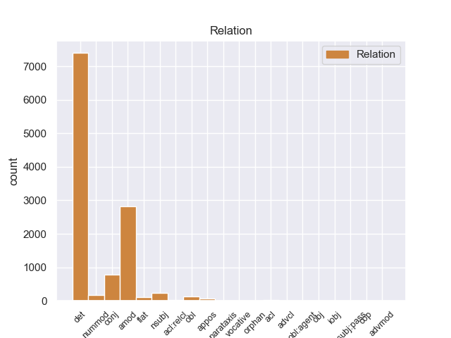
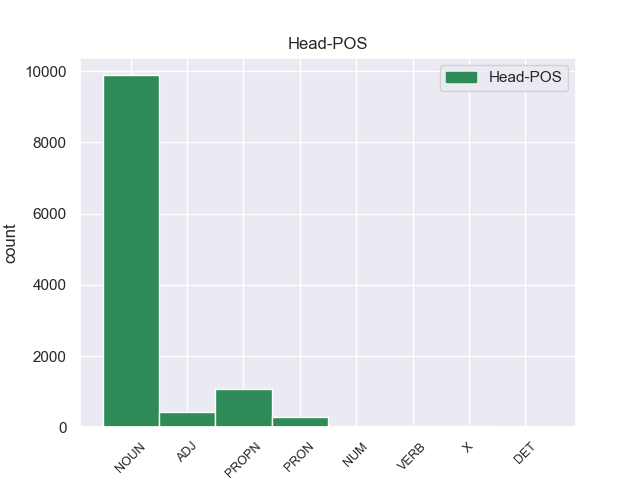
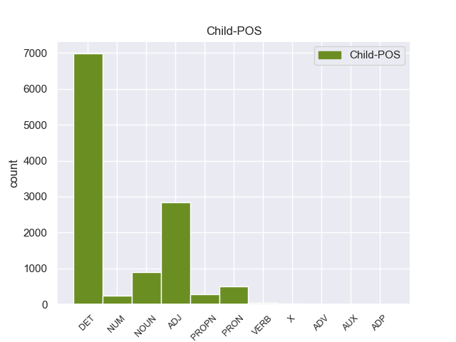

Distribution of features within this leaf



Agreement Rules sorted by frequency.
- When the dependent token is the determiner(det) of the head token, and the dependent token is DET.
1 Αυτό _ _ _ _ 0 _ _ _
2 μπορεί _ _ _ _ 0 _ _ _
3 να _ _ _ _ 0 _ _ _
4 μην _ _ _ _ 0 _ _ _
5 οδηγήσει _ _ _ _ 0 _ _ _
6 σ _ _ _ _ 0 _ _ _
7 τη _ _ _ _ 0 _ _ _
8 λήξη _ _ _ _ 0 _ _ _
9 του _ _ _ _ 0 _ _ _
10 εν _ _ _ _ 0 _ _ _
11 λόγω _ _ _ _ 0 _ _ _
12 ζητήματος _ _ _ _ 0 _ _ _
13 αλλά _ _ _ _ 0 _ _ _
14 , _ _ _ _ 0 _ _ _
15 σ _ _ _ _ 0 _ _ _
16 τη _ _ _ _ 0 _ _ _
17 μορφή _ _ _ _ 0 _ _ _
18 υπό _ _ _ _ 0 _ _ _
19 την _ _ _ _ 0 _ _ _
20 οποία _ _ _ _ 0 _ _ _
21 την _ _ _ _ 0 _ _ _
22 λάβαμε _ _ _ _ 0 _ _ _
23 , _ _ _ _ 0 _ _ _
24 αυτή _ _ _ _ 0 _ _ _
25 η _ _ _ _ 0 _ _ _
26 αίτηση _ _ _ _ 0 _ _ _
27 άρσης _ _ _ _ 0 _ _ _
28 της _ _ _ _ 0 _ _ _
29 ασυλίας _ _ _ _ 0 _ _ _
30 ήταν _ _ _ _ 0 _ _ _
31 , _ _ _ _ 0 _ _ _
32 κατά _ _ _ _ 0 _ _ _
33 την _ _ _ _ 0 _ _ _
34 άποψη _ _ _ _ 0 _ _ _
35 της _ _ _ _ 0 _ _ _
36 Επιτροπής _ _ _ _ 0 _ _ _
37 Νομικών _ _ _ _ 0 _ _ _
38 Θεμάτων _ _ _ _ 0 _ _ _
39 , _ _ _ _ 0 _ _ _
40 απαράδεκτη _ _ _ _ 0 _ _ _
41 , _ _ _ _ 0 _ _ _
42 άποψη _ _ _ _ 0 _ _ _
43 την _ _ _ _ 0 _ _ _
44 οποία _ _ _ _ 0 _ _ _
45 συνιστώ _ _ _ _ 0 _ _ _
46 σ _ _ _ _ 0 _ _ _
47 το ο DET _ Case=Acc|Gender=Neut|Number=Sing 48 det _ _
48 Σώμα σώμα NOUN _ Case=Acc|Gender=Neut|Number=Sing 0 _ _ _
49 να _ _ _ _ 0 _ _ _
50 υιοθετήσει _ _ _ _ 0 _ _ _
51 . _ _ _ _ 0 _ _ _
1 Αυτό _ _ _ _ 0 _ _ _
2 μπορεί _ _ _ _ 0 _ _ _
3 να _ _ _ _ 0 _ _ _
4 μην _ _ _ _ 0 _ _ _
5 οδηγήσει _ _ _ _ 0 _ _ _
6 σ _ _ _ _ 0 _ _ _
7 τη _ _ _ _ 0 _ _ _
8 λήξη _ _ _ _ 0 _ _ _
9 του _ _ _ _ 0 _ _ _
10 εν _ _ _ _ 0 _ _ _
11 λόγω _ _ _ _ 0 _ _ _
12 ζητήματος _ _ _ _ 0 _ _ _
13 αλλά _ _ _ _ 0 _ _ _
14 , _ _ _ _ 0 _ _ _
15 σ _ _ _ _ 0 _ _ _
16 τη _ _ _ _ 0 _ _ _
17 μορφή _ _ _ _ 0 _ _ _
18 υπό _ _ _ _ 0 _ _ _
19 την _ _ _ _ 0 _ _ _
20 οποία _ _ _ _ 0 _ _ _
21 την _ _ _ _ 0 _ _ _
22 λάβαμε _ _ _ _ 0 _ _ _
23 , _ _ _ _ 0 _ _ _
24 αυτή _ _ _ _ 0 _ _ _
25 η _ _ _ _ 0 _ _ _
26 αίτηση _ _ _ _ 0 _ _ _
27 άρσης _ _ _ _ 0 _ _ _
28 της _ _ _ _ 0 _ _ _
29 ασυλίας _ _ _ _ 0 _ _ _
30 ήταν _ _ _ _ 0 _ _ _
31 , _ _ _ _ 0 _ _ _
32 κατά _ _ _ _ 0 _ _ _
33 την _ _ _ _ 0 _ _ _
34 άποψη _ _ _ _ 0 _ _ _
35 της _ _ _ _ 0 _ _ _
36 Επιτροπής _ _ _ _ 0 _ _ _
37 Νομικών _ _ _ _ 0 _ _ _
38 Θεμάτων _ _ _ _ 0 _ _ _
39 , _ _ _ _ 0 _ _ _
40 απαράδεκτη απαράδεκτος ADJ _ Case=Nom|Gender=Fem|Number=Sing 42 amod _ _
41 , _ _ _ _ 0 _ _ _
42 άποψη άποψη NOUN _ Case=Nom|Gender=Fem|Number=Sing 0 _ _ _
43 την _ _ _ _ 0 _ _ _
44 οποία _ _ _ _ 0 _ _ _
45 συνιστώ _ _ _ _ 0 _ _ _
46 σ _ _ _ _ 0 _ _ _
47 το _ _ _ _ 0 _ _ _
48 Σώμα _ _ _ _ 0 _ _ _
49 να _ _ _ _ 0 _ _ _
50 υιοθετήσει _ _ _ _ 0 _ _ _
51 . _ _ _ _ 0 _ _ _
1 Θα _ _ _ _ 0 _ _ _
2 ήθελα _ _ _ _ 0 _ _ _
3 να _ _ _ _ 0 _ _ _
4 επιστήσω _ _ _ _ 0 _ _ _
5 την _ _ _ _ 0 _ _ _
6 προσοχή _ _ _ _ 0 _ _ _
7 όλων _ _ _ _ 0 _ _ _
8 των _ _ _ _ 0 _ _ _
9 συναδέλφων _ _ _ _ 0 _ _ _
10 σ _ _ _ _ 0 _ _ _
11 το _ _ _ _ 0 _ _ _
12 γεγονός _ _ _ _ 0 _ _ _
13 ότι _ _ _ _ 0 _ _ _
14 , _ _ _ _ 0 _ _ _
15 εάν _ _ _ _ 0 _ _ _
16 υπάρχουν _ _ _ _ 0 _ _ _
17 κάποιες _ _ _ _ 0 _ _ _
18 ελευθερίες _ _ _ _ 0 _ _ _
19 οι _ _ _ _ 0 _ _ _
20 οποίες _ _ _ _ 0 _ _ _
21 είναι _ _ _ _ 0 _ _ _
22 ζωτικής _ _ _ _ 0 _ _ _
23 σημασίας _ _ _ _ 0 _ _ _
24 για _ _ _ _ 0 _ _ _
25 την _ _ _ _ 0 _ _ _
26 άσκηση _ _ _ _ 0 _ _ _
27 του _ _ _ _ 0 _ _ _
28 λειτουργήματος _ _ _ _ 0 _ _ _
29 της _ _ _ _ 0 _ _ _
30 δημόσιας _ _ _ _ 0 _ _ _
31 εκπροσώπησης _ _ _ _ 0 _ _ _
32 , _ _ _ _ 0 _ _ _
33 ιδίως _ _ _ _ 0 _ _ _
34 για _ _ _ _ 0 _ _ _
35 ένα _ _ _ _ 0 _ _ _
36 Κοινοβούλιο _ _ _ _ 0 _ _ _
37 σαν _ _ _ _ 0 _ _ _
38 το _ _ _ _ 0 _ _ _
39 δικό _ _ _ _ 0 _ _ _
40 μας _ _ _ _ 0 _ _ _
41 , _ _ _ _ 0 _ _ _
42 η _ _ _ _ 0 _ _ _
43 ελευθερία _ _ _ _ 0 _ _ _
44 της _ _ _ _ 0 _ _ _
45 επικοινωνίας _ _ _ _ 0 _ _ _
46 με _ _ _ _ 0 _ _ _
47 άλλους _ _ _ _ 0 _ _ _
48 πολίτες πολίτης NOUN _ Case=Acc|Gender=Masc|Number=Plur 0 _ _ _
49 και _ _ _ _ 0 _ _ _
50 με _ _ _ _ 0 _ _ _
51 τους _ _ _ _ 0 _ _ _
52 πολίτες πολίτς NOUN _ Case=Acc|Gender=Masc|Number=Plur 48 conj _ _
53 τρίτων _ _ _ _ 0 _ _ _
54 χωρών _ _ _ _ 0 _ _ _
55 , _ _ _ _ 0 _ _ _
56 καθώς _ _ _ _ 0 _ _ _
57 και _ _ _ _ 0 _ _ _
58 η _ _ _ _ 0 _ _ _
59 ελευθερία _ _ _ _ 0 _ _ _
60 μετακίνησης _ _ _ _ 0 _ _ _
61 , _ _ _ _ 0 _ _ _
62 είναι _ _ _ _ 0 _ _ _
63 κρίσιμες _ _ _ _ 0 _ _ _
64 για _ _ _ _ 0 _ _ _
65 τη _ _ _ _ 0 _ _ _
66 διεκπεραίωση _ _ _ _ 0 _ _ _
67 του _ _ _ _ 0 _ _ _
68 έργου _ _ _ _ 0 _ _ _
69 μας _ _ _ _ 0 _ _ _
70 . _ _ _ _ 0 _ _ _
1 Αυτό _ _ _ _ 0 _ _ _
2 μπορεί _ _ _ _ 0 _ _ _
3 να _ _ _ _ 0 _ _ _
4 μην _ _ _ _ 0 _ _ _
5 οδηγήσει _ _ _ _ 0 _ _ _
6 σ _ _ _ _ 0 _ _ _
7 τη _ _ _ _ 0 _ _ _
8 λήξη _ _ _ _ 0 _ _ _
9 του _ _ _ _ 0 _ _ _
10 εν _ _ _ _ 0 _ _ _
11 λόγω _ _ _ _ 0 _ _ _
12 ζητήματος _ _ _ _ 0 _ _ _
13 αλλά _ _ _ _ 0 _ _ _
14 , _ _ _ _ 0 _ _ _
15 σ _ _ _ _ 0 _ _ _
16 τη _ _ _ _ 0 _ _ _
17 μορφή _ _ _ _ 0 _ _ _
18 υπό _ _ _ _ 0 _ _ _
19 την _ _ _ _ 0 _ _ _
20 οποία _ _ _ _ 0 _ _ _
21 την _ _ _ _ 0 _ _ _
22 λάβαμε _ _ _ _ 0 _ _ _
23 , _ _ _ _ 0 _ _ _
24 αυτή αυτός PRON _ Case=Nom|Gender=Fem|Number=Sing|Person=3|PronType=Dem 26 det _ _
25 η _ _ _ _ 0 _ _ _
26 αίτηση αίτηση NOUN _ Case=Nom|Gender=Fem|Number=Sing 0 _ _ _
27 άρσης _ _ _ _ 0 _ _ _
28 της _ _ _ _ 0 _ _ _
29 ασυλίας _ _ _ _ 0 _ _ _
30 ήταν _ _ _ _ 0 _ _ _
31 , _ _ _ _ 0 _ _ _
32 κατά _ _ _ _ 0 _ _ _
33 την _ _ _ _ 0 _ _ _
34 άποψη _ _ _ _ 0 _ _ _
35 της _ _ _ _ 0 _ _ _
36 Επιτροπής _ _ _ _ 0 _ _ _
37 Νομικών _ _ _ _ 0 _ _ _
38 Θεμάτων _ _ _ _ 0 _ _ _
39 , _ _ _ _ 0 _ _ _
40 απαράδεκτη _ _ _ _ 0 _ _ _
41 , _ _ _ _ 0 _ _ _
42 άποψη _ _ _ _ 0 _ _ _
43 την _ _ _ _ 0 _ _ _
44 οποία _ _ _ _ 0 _ _ _
45 συνιστώ _ _ _ _ 0 _ _ _
46 σ _ _ _ _ 0 _ _ _
47 το _ _ _ _ 0 _ _ _
48 Σώμα _ _ _ _ 0 _ _ _
49 να _ _ _ _ 0 _ _ _
50 υιοθετήσει _ _ _ _ 0 _ _ _
51 . _ _ _ _ 0 _ _ _
1 Πρώην _ _ _ _ 0 _ _ _
2 Υπουργός _ _ _ _ 0 _ _ _
3 της _ _ _ _ 0 _ _ _
4 Κυβέρνησης _ _ _ _ 0 _ _ _
5 του _ _ _ _ 0 _ _ _
6 Χοσέ _ _ _ _ 0 _ _ _
7 Μαρία _ _ _ _ 0 _ _ _
8 Αθνάρ _ _ _ _ 0 _ _ _
9 , _ _ _ _ 0 _ _ _
10 σ _ _ _ _ 0 _ _ _
11 την _ _ _ _ 0 _ _ _
12 Ισπανία _ _ _ _ 0 _ _ _
13 , _ _ _ _ 0 _ _ _
14 καταδικάστηκε _ _ _ _ 0 _ _ _
15 σε _ _ _ _ 0 _ _ _
16 έξι έξι NUM _ Case=Acc|Gender=Neut|Number=Plur|NumType=Card 17 nummod _ _
17 έτη έτο NOUN _ Case=Acc|Gender=Neut|Number=Plur 0 _ _ _
18 κάθειρξης _ _ _ _ 0 _ _ _
19 για _ _ _ _ 0 _ _ _
20 ένα _ _ _ _ 0 _ _ _
21 πολύ _ _ _ _ 0 _ _ _
22 μεγάλο _ _ _ _ 0 _ _ _
23 σκάνδαλο _ _ _ _ 0 _ _ _
24 διαφθοράς _ _ _ _ 0 _ _ _
25 . _ _ _ _ 0 _ _ _
1 Θα _ _ _ _ 0 _ _ _
2 ήθελα _ _ _ _ 0 _ _ _
3 να _ _ _ _ 0 _ _ _
4 επιστήσω _ _ _ _ 0 _ _ _
5 την _ _ _ _ 0 _ _ _
6 προσοχή _ _ _ _ 0 _ _ _
7 όλων _ _ _ _ 0 _ _ _
8 των _ _ _ _ 0 _ _ _
9 συναδέλφων _ _ _ _ 0 _ _ _
10 σ _ _ _ _ 0 _ _ _
11 το _ _ _ _ 0 _ _ _
12 γεγονός _ _ _ _ 0 _ _ _
13 ότι _ _ _ _ 0 _ _ _
14 , _ _ _ _ 0 _ _ _
15 εάν _ _ _ _ 0 _ _ _
16 υπάρχουν _ _ _ _ 0 _ _ _
17 κάποιες _ _ _ _ 0 _ _ _
18 ελευθερίες _ _ _ _ 0 _ _ _
19 οι _ _ _ _ 0 _ _ _
20 οποίες _ _ _ _ 0 _ _ _
21 είναι _ _ _ _ 0 _ _ _
22 ζωτικής _ _ _ _ 0 _ _ _
23 σημασίας _ _ _ _ 0 _ _ _
24 για _ _ _ _ 0 _ _ _
25 την _ _ _ _ 0 _ _ _
26 άσκηση _ _ _ _ 0 _ _ _
27 του _ _ _ _ 0 _ _ _
28 λειτουργήματος _ _ _ _ 0 _ _ _
29 της _ _ _ _ 0 _ _ _
30 δημόσιας _ _ _ _ 0 _ _ _
31 εκπροσώπησης _ _ _ _ 0 _ _ _
32 , _ _ _ _ 0 _ _ _
33 ιδίως _ _ _ _ 0 _ _ _
34 για _ _ _ _ 0 _ _ _
35 ένα _ _ _ _ 0 _ _ _
36 Κοινοβούλιο _ _ _ _ 0 _ _ _
37 σαν _ _ _ _ 0 _ _ _
38 το _ _ _ _ 0 _ _ _
39 δικό _ _ _ _ 0 _ _ _
40 μας _ _ _ _ 0 _ _ _
41 , _ _ _ _ 0 _ _ _
42 η _ _ _ _ 0 _ _ _
43 ελευθερία _ _ _ _ 0 _ _ _
44 της _ _ _ _ 0 _ _ _
45 επικοινωνίας _ _ _ _ 0 _ _ _
46 με _ _ _ _ 0 _ _ _
47 άλλους _ _ _ _ 0 _ _ _
48 πολίτες _ _ _ _ 0 _ _ _
49 και _ _ _ _ 0 _ _ _
50 με _ _ _ _ 0 _ _ _
51 τους _ _ _ _ 0 _ _ _
52 πολίτες _ _ _ _ 0 _ _ _
53 τρίτων _ _ _ _ 0 _ _ _
54 χωρών _ _ _ _ 0 _ _ _
55 , _ _ _ _ 0 _ _ _
56 καθώς _ _ _ _ 0 _ _ _
57 και _ _ _ _ 0 _ _ _
58 η _ _ _ _ 0 _ _ _
59 ελευθερία ελευθερία NOUN _ Case=Nom|Gender=Fem|Number=Sing 63 nsubj _ _
60 μετακίνησης _ _ _ _ 0 _ _ _
61 , _ _ _ _ 0 _ _ _
62 είναι _ _ _ _ 0 _ _ _
63 κρίσιμες κρίσιμος ADJ _ Case=Nom|Gender=Fem|Number=Plur 0 _ _ _
64 για _ _ _ _ 0 _ _ _
65 τη _ _ _ _ 0 _ _ _
66 διεκπεραίωση _ _ _ _ 0 _ _ _
67 του _ _ _ _ 0 _ _ _
68 έργου _ _ _ _ 0 _ _ _
69 μας _ _ _ _ 0 _ _ _
70 . _ _ _ _ 0 _ _ _
1 Από _ _ _ _ 0 _ _ _
2 τη _ _ _ _ 0 _ _ _
3 πλευρά _ _ _ _ 0 _ _ _
4 του _ _ _ _ 0 _ _ _
5 ο _ _ _ _ 0 _ _ _
6 Πρωθυπουργός _ _ _ _ 0 _ _ _
7 του _ _ _ _ 0 _ _ _
8 Ισραήλ _ _ _ _ 0 _ _ _
9 , _ _ _ _ 0 _ _ _
10 Βενιαμίν Βενιαμίν PROPN _ Case=Nom|Gender=Masc|Number=Sing 0 _ _ _
11 Νετανιάχου Νετανιάχου PROPN _ Case=Nom|Gender=Masc|Number=Sing 10 flat _ _
12 , _ _ _ _ 0 _ _ _
13 εξέφρασε _ _ _ _ 0 _ _ _
14 ικανοποίηση _ _ _ _ 0 _ _ _
15 για _ _ _ _ 0 _ _ _
16 το _ _ _ _ 0 _ _ _
17 σχόλιο _ _ _ _ 0 _ _ _
18 του _ _ _ _ 0 _ _ _
19 Μπαράκ _ _ _ _ 0 _ _ _
20 Ομπάμα _ _ _ _ 0 _ _ _
21 ότι _ _ _ _ 0 _ _ _
22 « _ _ _ _ 0 _ _ _
23 θα _ _ _ _ 0 _ _ _
24 εξεταστούν _ _ _ _ 0 _ _ _
25 όλες _ _ _ _ 0 _ _ _
26 οι _ _ _ _ 0 _ _ _
27 εναλλακτικές _ _ _ _ 0 _ _ _
28 λύσεις _ _ _ _ 0 _ _ _
29 αναφορικά _ _ _ _ 0 _ _ _
30 με _ _ _ _ 0 _ _ _
31 το _ _ _ _ 0 _ _ _
32 πυρηνικό _ _ _ _ 0 _ _ _
33 πρόγραμμα _ _ _ _ 0 _ _ _
34 του _ _ _ _ 0 _ _ _
35 Ιράν _ _ _ _ 0 _ _ _
36 » _ _ _ _ 0 _ _ _
37 . _ _ _ _ 0 _ _ _
1 Ως _ _ _ _ 0 _ _ _
2 αποτέλεσμα _ _ _ _ 0 _ _ _
3 αυτών _ _ _ _ 0 _ _ _
4 των _ _ _ _ 0 _ _ _
5 συνθηκών _ _ _ _ 0 _ _ _
6 η _ _ _ _ 0 _ _ _
7 Ελλάδα _ _ _ _ 0 _ _ _
8 προσάρτησε _ _ _ _ 0 _ _ _
9 ( _ _ _ _ 0 _ _ _
10 προσωρινά _ _ _ _ 0 _ _ _
11 ) _ _ _ _ 0 _ _ _
12 την _ _ _ _ 0 _ _ _
13 Ανατολική _ _ _ _ 0 _ _ _
14 Θράκη Θράκη PROPN _ Case=Acc|Gender=Fem|Number=Sing 0 _ _ _
15 και _ _ _ _ 0 _ _ _
16 την _ _ _ _ 0 _ _ _
17 Σμύρνη Σμύρνη PROPN _ Case=Acc|Gender=Fem|Number=Sing 14 conj _ _
18 . _ _ _ _ 0 _ _ _
1 Με _ _ _ _ 0 _ _ _
2 αυτές _ _ _ _ 0 _ _ _
3 τις _ _ _ _ 0 _ _ _
4 κατηγορίες _ _ _ _ 0 _ _ _
5 , _ _ _ _ 0 _ _ _
6 από _ _ _ _ 0 _ _ _
7 τις _ _ _ _ 0 _ _ _
8 οποίες _ _ _ _ 0 _ _ _
9 η _ _ _ _ 0 _ _ _
10 πρώτη _ _ _ _ 0 _ _ _
11 αφορά _ _ _ _ 0 _ _ _
12 λαθρεμπόριο _ _ _ _ 0 _ _ _
13 όπλων _ _ _ _ 0 _ _ _
14 κλπ. _ _ _ _ 0 _ _ _
15 , _ _ _ _ 0 _ _ _
16 και _ _ _ _ 0 _ _ _
17 βαρύνει _ _ _ _ 0 _ _ _
18 τόσο _ _ _ _ 0 _ _ _
19 τον _ _ _ _ 0 _ _ _
20 κ. _ _ _ _ 0 _ _ _
21 Pasqua _ _ _ _ 0 _ _ _
22 όσο _ _ _ _ 0 _ _ _
23 και _ _ _ _ 0 _ _ _
24 τον _ _ _ _ 0 _ _ _
25 κ. _ _ _ _ 0 _ _ _
26 Marchiani _ _ _ _ 0 _ _ _
27 , _ _ _ _ 0 _ _ _
28 ενώ _ _ _ _ 0 _ _ _
29 η _ _ _ _ 0 _ _ _
30 δεύτερη _ _ _ _ 0 _ _ _
31 στρέφεται _ _ _ _ 0 _ _ _
32 μόνον _ _ _ _ 0 _ _ _
33 εναντίον _ _ _ _ 0 _ _ _
34 του _ _ _ _ 0 _ _ _
35 κ. _ _ _ _ 0 _ _ _
36 Pasqua _ _ _ _ 0 _ _ _
37 , _ _ _ _ 0 _ _ _
38 οι _ _ _ _ 0 _ _ _
39 ανακριτές _ _ _ _ 0 _ _ _
40 δικαστές _ _ _ _ 0 _ _ _
41 ζητούν _ _ _ _ 0 _ _ _
42 την _ _ _ _ 0 _ _ _
43 άρση _ _ _ _ 0 _ _ _
44 της _ _ _ _ 0 _ _ _
45 βουλευτικής _ _ _ _ 0 _ _ _
46 ασυλίας _ _ _ _ 0 _ _ _
47 των _ _ _ _ 0 _ _ _
48 εν _ _ _ _ 0 _ _ _
49 λόγω _ _ _ _ 0 _ _ _
50 δύο _ _ _ _ 0 _ _ _
51 κυρίων _ _ _ _ 0 _ _ _
52 , _ _ _ _ 0 _ _ _
53 προκειμένου _ _ _ _ 0 _ _ _
54 να _ _ _ _ 0 _ _ _
55 τους _ _ _ _ 0 _ _ _
56 επιβληθούν _ _ _ _ 0 _ _ _
57 ορισμένα _ _ _ _ 0 _ _ _
58 μέτρα _ _ _ _ 0 _ _ _
59 δικαστικής _ _ _ _ 0 _ _ _
60 επιτήρησης _ _ _ _ 0 _ _ _
61 : _ _ _ _ 0 _ _ _
62 να _ _ _ _ 0 _ _ _
63 τους _ _ _ _ 0 _ _ _
64 απαγορευθεί _ _ _ _ 0 _ _ _
65 η _ _ _ _ 0 _ _ _
66 επαφή _ _ _ _ 0 _ _ _
67 με _ _ _ _ 0 _ _ _
68 διάφορους _ _ _ _ 0 _ _ _
69 μάρτυρες μάρτυός NOUN _ Case=Acc|Gender=Masc|Number=Plur 0 _ _ _
70 ή _ _ _ _ 0 _ _ _
71 συγκατηγορουμένους συγκατηγορουμένος ADJ _ Case=Acc|Gender=Masc|Number=Plur 69 conj _ _
72 σ _ _ _ _ 0 _ _ _
73 τις _ _ _ _ 0 _ _ _
74 υποθέσεις _ _ _ _ 0 _ _ _
75 αυτές _ _ _ _ 0 _ _ _
76 και _ _ _ _ 0 _ _ _
77 η _ _ _ _ 0 _ _ _
78 μετάβαση _ _ _ _ 0 _ _ _
79 σε _ _ _ _ 0 _ _ _
80 διάφορες _ _ _ _ 0 _ _ _
81 χώρες _ _ _ _ 0 _ _ _
82 , _ _ _ _ 0 _ _ _
83 καθώς _ _ _ _ 0 _ _ _
84 και _ _ _ _ 0 _ _ _
85 να _ _ _ _ 0 _ _ _
86 τους _ _ _ _ 0 _ _ _
87 επιβληθεί _ _ _ _ 0 _ _ _
88 ενδεχομένως _ _ _ _ 0 _ _ _
89 η _ _ _ _ 0 _ _ _
90 καταβολή _ _ _ _ 0 _ _ _
91 εγγύησης _ _ _ _ 0 _ _ _
92 . _ _ _ _ 0 _ _ _
1 Αυτό _ _ _ _ 0 _ _ _
2 μπορεί _ _ _ _ 0 _ _ _
3 να _ _ _ _ 0 _ _ _
4 μην _ _ _ _ 0 _ _ _
5 οδηγήσει _ _ _ _ 0 _ _ _
6 σ _ _ _ _ 0 _ _ _
7 τη _ _ _ _ 0 _ _ _
8 λήξη _ _ _ _ 0 _ _ _
9 του _ _ _ _ 0 _ _ _
10 εν _ _ _ _ 0 _ _ _
11 λόγω _ _ _ _ 0 _ _ _
12 ζητήματος _ _ _ _ 0 _ _ _
13 αλλά _ _ _ _ 0 _ _ _
14 , _ _ _ _ 0 _ _ _
15 σ _ _ _ _ 0 _ _ _
16 τη _ _ _ _ 0 _ _ _
17 μορφή _ _ _ _ 0 _ _ _
18 υπό _ _ _ _ 0 _ _ _
19 την _ _ _ _ 0 _ _ _
20 οποία _ _ _ _ 0 _ _ _
21 την _ _ _ _ 0 _ _ _
22 λάβαμε _ _ _ _ 0 _ _ _
23 , _ _ _ _ 0 _ _ _
24 αυτή _ _ _ _ 0 _ _ _
25 η _ _ _ _ 0 _ _ _
26 αίτηση _ _ _ _ 0 _ _ _
27 άρσης _ _ _ _ 0 _ _ _
28 της _ _ _ _ 0 _ _ _
29 ασυλίας _ _ _ _ 0 _ _ _
30 ήταν _ _ _ _ 0 _ _ _
31 , _ _ _ _ 0 _ _ _
32 κατά _ _ _ _ 0 _ _ _
33 την _ _ _ _ 0 _ _ _
34 άποψη άποψη NOUN _ Case=Acc|Gender=Fem|Number=Sing 40 obl _ _
35 της _ _ _ _ 0 _ _ _
36 Επιτροπής _ _ _ _ 0 _ _ _
37 Νομικών _ _ _ _ 0 _ _ _
38 Θεμάτων _ _ _ _ 0 _ _ _
39 , _ _ _ _ 0 _ _ _
40 απαράδεκτη απαράδεκτος ADJ _ Case=Nom|Gender=Fem|Number=Sing 0 _ _ _
41 , _ _ _ _ 0 _ _ _
42 άποψη _ _ _ _ 0 _ _ _
43 την _ _ _ _ 0 _ _ _
44 οποία _ _ _ _ 0 _ _ _
45 συνιστώ _ _ _ _ 0 _ _ _
46 σ _ _ _ _ 0 _ _ _
47 το _ _ _ _ 0 _ _ _
48 Σώμα _ _ _ _ 0 _ _ _
49 να _ _ _ _ 0 _ _ _
50 υιοθετήσει _ _ _ _ 0 _ _ _
51 . _ _ _ _ 0 _ _ _
1 Κύριε _ _ _ _ 0 _ _ _
2 Πρόεδρε _ _ _ _ 0 _ _ _
3 , _ _ _ _ 0 _ _ _
4 οι _ _ _ _ 0 _ _ _
5 υπό _ _ _ _ 0 _ _ _
6 συζήτηση _ _ _ _ 0 _ _ _
7 υποθέσεις _ _ _ _ 0 _ _ _
8 αφορούν _ _ _ _ 0 _ _ _
9 πολύ _ _ _ _ 0 _ _ _
10 σοβαρές _ _ _ _ 0 _ _ _
11 κατηγορίες _ _ _ _ 0 _ _ _
12 , _ _ _ _ 0 _ _ _
13 οι _ _ _ _ 0 _ _ _
14 οποίες _ _ _ _ 0 _ _ _
15 βαρύνουν _ _ _ _ 0 _ _ _
16 δύο _ _ _ _ 0 _ _ _
17 βουλευτές _ _ _ _ 0 _ _ _
18 του _ _ _ _ 0 _ _ _
19 Σώματος _ _ _ _ 0 _ _ _
20 και _ _ _ _ 0 _ _ _
21 αναφέρονται _ _ _ _ 0 _ _ _
22 σ _ _ _ _ 0 _ _ _
23 την _ _ _ _ 0 _ _ _
24 πρώτη πρώτος NUM _ Case=Acc|Gender=Fem|Number=Sing|NumType=Ord 25 amod _ _
25 σελίδα σελίδα NOUN _ Case=Acc|Gender=Fem|Number=Sing 0 _ _ _
26 της _ _ _ _ 0 _ _ _
27 αιτιολογικής _ _ _ _ 0 _ _ _
28 έκθεσης _ _ _ _ 0 _ _ _
29 της _ _ _ _ 0 _ _ _
30 έκθεσής _ _ _ _ 0 _ _ _
31 μου _ _ _ _ 0 _ _ _
32 , _ _ _ _ 0 _ _ _
33 σ _ _ _ _ 0 _ _ _
34 την _ _ _ _ 0 _ _ _
35 οποία _ _ _ _ 0 _ _ _
36 συνιστώ _ _ _ _ 0 _ _ _
37 σ _ _ _ _ 0 _ _ _
38 τους _ _ _ _ 0 _ _ _
39 συναδέλφους _ _ _ _ 0 _ _ _
40 να _ _ _ _ 0 _ _ _
41 ρίξουν _ _ _ _ 0 _ _ _
42 μια _ _ _ _ 0 _ _ _
43 ματιά _ _ _ _ 0 _ _ _
44 . _ _ _ _ 0 _ _ _
1 Παρόμοιο _ _ _ _ 0 _ _ _
2 καθεστώς _ _ _ _ 0 _ _ _
3 επιδιώκουν _ _ _ _ 0 _ _ _
4 και _ _ _ _ 0 _ _ _
5 οι _ _ _ _ 0 _ _ _
6 πόλεις _ _ _ _ 0 _ _ _
7 σ _ _ _ _ 0 _ _ _
8 τα _ _ _ _ 0 _ _ _
9 ανατολικά _ _ _ _ 0 _ _ _
10 της _ _ _ _ 0 _ _ _
11 Λιβύης _ _ _ _ 0 _ _ _
12 , _ _ _ _ 0 _ _ _
13 οι _ _ _ _ 0 _ _ _
14 οποίες οποίος PRON _ Case=Nom|Gender=Fem|Number=Plur|Person=3|PronType=Rel 16 nsubj _ _
15 είναι _ _ _ _ 0 _ _ _
16 πλούσιες πλούσιος ADJ _ Case=Nom|Gender=Fem|Number=Plur 0 _ _ _
17 σε _ _ _ _ 0 _ _ _
18 κοιτάσματα _ _ _ _ 0 _ _ _
19 πετρελαίου _ _ _ _ 0 _ _ _
20 . _ _ _ _ 0 _ _ _
1 Από _ _ _ _ 0 _ _ _
2 τη _ _ _ _ 0 _ _ _
3 πλευρά _ _ _ _ 0 _ _ _
4 του _ _ _ _ 0 _ _ _
5 ο _ _ _ _ 0 _ _ _
6 Πρωθυπουργός πρωθυπουργός NOUN _ Case=Nom|Gender=Masc|Number=Sing 0 _ _ _
7 του _ _ _ _ 0 _ _ _
8 Ισραήλ _ _ _ _ 0 _ _ _
9 , _ _ _ _ 0 _ _ _
10 Βενιαμίν Βενιαμίν PROPN _ Case=Nom|Gender=Masc|Number=Sing 6 appos _ _
11 Νετανιάχου _ _ _ _ 0 _ _ _
12 , _ _ _ _ 0 _ _ _
13 εξέφρασε _ _ _ _ 0 _ _ _
14 ικανοποίηση _ _ _ _ 0 _ _ _
15 για _ _ _ _ 0 _ _ _
16 το _ _ _ _ 0 _ _ _
17 σχόλιο _ _ _ _ 0 _ _ _
18 του _ _ _ _ 0 _ _ _
19 Μπαράκ _ _ _ _ 0 _ _ _
20 Ομπάμα _ _ _ _ 0 _ _ _
21 ότι _ _ _ _ 0 _ _ _
22 « _ _ _ _ 0 _ _ _
23 θα _ _ _ _ 0 _ _ _
24 εξεταστούν _ _ _ _ 0 _ _ _
25 όλες _ _ _ _ 0 _ _ _
26 οι _ _ _ _ 0 _ _ _
27 εναλλακτικές _ _ _ _ 0 _ _ _
28 λύσεις _ _ _ _ 0 _ _ _
29 αναφορικά _ _ _ _ 0 _ _ _
30 με _ _ _ _ 0 _ _ _
31 το _ _ _ _ 0 _ _ _
32 πυρηνικό _ _ _ _ 0 _ _ _
33 πρόγραμμα _ _ _ _ 0 _ _ _
34 του _ _ _ _ 0 _ _ _
35 Ιράν _ _ _ _ 0 _ _ _
36 » _ _ _ _ 0 _ _ _
37 . _ _ _ _ 0 _ _ _
1 O _ _ _ _ 0 _ _ _
2 Πρόεδρος _ _ _ _ 0 _ _ _
3 των _ _ _ _ 0 _ _ _
4 ΗΠΑ _ _ _ _ 0 _ _ _
5 , _ _ _ _ 0 _ _ _
6 Μπαράκ _ _ _ _ 0 _ _ _
7 Ομπάμα _ _ _ _ 0 _ _ _
8 , _ _ _ _ 0 _ _ _
9 επανέλαβε _ _ _ _ 0 _ _ _
10 την _ _ _ _ 0 _ _ _
11 δέσμευσή _ _ _ _ 0 _ _ _
12 του _ _ _ _ 0 _ _ _
13 ότι _ _ _ _ 0 _ _ _
14 θα _ _ _ _ 0 _ _ _
15 εξεταστούν _ _ _ _ 0 _ _ _
16 όλες _ _ _ _ 0 _ _ _
17 οι _ _ _ _ 0 _ _ _
18 εναλλακτικές _ _ _ _ 0 _ _ _
19 λύσεις _ _ _ _ 0 _ _ _
20 , _ _ _ _ 0 _ _ _
21 συμπεριλαμβανομένης συμπεριλαμβανόμενος VERB _ Case=Gen|Gender=Fem|Number=Sing 25 amod _ _
22 και _ _ _ _ 0 _ _ _
23 της _ _ _ _ 0 _ _ _
24 στρατιωτικής _ _ _ _ 0 _ _ _
25 αναμέτρησης αναμέτρηση NOUN _ Case=Gen|Gender=Fem|Number=Sing 0 _ _ _
26 , _ _ _ _ 0 _ _ _
27 για _ _ _ _ 0 _ _ _
28 να _ _ _ _ 0 _ _ _
29 μην _ _ _ _ 0 _ _ _
30 αποκτήσει _ _ _ _ 0 _ _ _
31 το _ _ _ _ 0 _ _ _
32 Ιράν _ _ _ _ 0 _ _ _
33 πυρηνικά _ _ _ _ 0 _ _ _
34 όπλα _ _ _ _ 0 _ _ _
35 . _ _ _ _ 0 _ _ _
1 Παρόμοιο _ _ _ _ 0 _ _ _
2 καθεστώς _ _ _ _ 0 _ _ _
3 επιδιώκουν _ _ _ _ 0 _ _ _
4 και _ _ _ _ 0 _ _ _
5 οι _ _ _ _ 0 _ _ _
6 πόλεις πόλεα NOUN _ Case=Nom|Gender=Fem|Number=Plur 0 _ _ _
7 σ _ _ _ _ 0 _ _ _
8 τα _ _ _ _ 0 _ _ _
9 ανατολικά _ _ _ _ 0 _ _ _
10 της _ _ _ _ 0 _ _ _
11 Λιβύης _ _ _ _ 0 _ _ _
12 , _ _ _ _ 0 _ _ _
13 οι _ _ _ _ 0 _ _ _
14 οποίες _ _ _ _ 0 _ _ _
15 είναι _ _ _ _ 0 _ _ _
16 πλούσιες πλούσιος ADJ _ Case=Nom|Gender=Fem|Number=Plur 6 acl:relcl _ _
17 σε _ _ _ _ 0 _ _ _
18 κοιτάσματα _ _ _ _ 0 _ _ _
19 πετρελαίου _ _ _ _ 0 _ _ _
20 . _ _ _ _ 0 _ _ _
1 Σ _ _ _ _ 0 _ _ _
2 τα _ _ _ _ 0 _ _ _
3 τείχη _ _ _ _ 0 _ _ _
4 του _ _ _ _ 0 _ _ _
5 Νέου _ _ _ _ 0 _ _ _
6 Φρουρίου _ _ _ _ 0 _ _ _
7 , _ _ _ _ 0 _ _ _
8 σ _ _ _ _ 0 _ _ _
9 τα _ _ _ _ 0 _ _ _
10 δυτικά _ _ _ _ 0 _ _ _
11 , _ _ _ _ 0 _ _ _
12 υπάρχει _ _ _ _ 0 _ _ _
13 αποτυπωμένο _ _ _ _ 0 _ _ _
14 το _ _ _ _ 0 _ _ _
15 έμβλημα έμβλημα NOUN _ Case=Nom|Gender=Neut|Number=Sing 0 _ _ _
16 της _ _ _ _ 0 _ _ _
17 Γαληνότατης _ _ _ _ 0 _ _ _
18 Δημοκρατίας _ _ _ _ 0 _ _ _
19 της _ _ _ _ 0 _ _ _
20 Βενετίας _ _ _ _ 0 _ _ _
21 , _ _ _ _ 0 _ _ _
22 το _ _ _ _ 0 _ _ _
23 λιοντάρι λιοντάρι NOUN _ Case=Nom|Gender=Neut|Number=Sing 15 appos _ _
24 του _ _ _ _ 0 _ _ _
25 Αγίου _ _ _ _ 0 _ _ _
26 Μάρκου _ _ _ _ 0 _ _ _
27 . _ _ _ _ 0 _ _ _
1 Όμως _ _ _ _ 0 _ _ _
2 , _ _ _ _ 0 _ _ _
3 ο _ _ _ _ 0 _ _ _
4 Υπουργός _ _ _ _ 0 _ _ _
5 Δικαιοσύνης _ _ _ _ 0 _ _ _
6 διαβίβασε _ _ _ _ 0 _ _ _
7 την _ _ _ _ 0 _ _ _
8 αίτηση αίτηση NOUN _ Case=Acc|Gender=Fem|Number=Sing 0 _ _ _
9 άρσης _ _ _ _ 0 _ _ _
10 της _ _ _ _ 0 _ _ _
11 ασυλίας _ _ _ _ 0 _ _ _
12 , _ _ _ _ 0 _ _ _
13 συνοδευόμενη συνοδείζω VERB _ Aspect=Perf|Case=Nom|Gender=Fem|Number=Sing|VerbForm=Part|Voice=Pass 8 acl _ _
14 από _ _ _ _ 0 _ _ _
15 τις _ _ _ _ 0 _ _ _
16 διαβιβαστικές _ _ _ _ 0 _ _ _
17 επιστολές _ _ _ _ 0 _ _ _
18 τόσο _ _ _ _ 0 _ _ _
19 του _ _ _ _ 0 _ _ _
20 Εισαγγελέα _ _ _ _ 0 _ _ _
21 Πλημμελειοδικών _ _ _ _ 0 _ _ _
22 όσο _ _ _ _ 0 _ _ _
23 και _ _ _ _ 0 _ _ _
24 του _ _ _ _ 0 _ _ _
25 Εισαγγελέα _ _ _ _ 0 _ _ _
26 Εφετών _ _ _ _ 0 _ _ _
27 , _ _ _ _ 0 _ _ _
28 χωρίς _ _ _ _ 0 _ _ _
29 να _ _ _ _ 0 _ _ _
30 προβαίνει _ _ _ _ 0 _ _ _
31 σε _ _ _ _ 0 _ _ _
32 κανέναν _ _ _ _ 0 _ _ _
33 σχολιασμό _ _ _ _ 0 _ _ _
34 . _ _ _ _ 0 _ _ _
1 O _ _ _ _ 0 _ _ _
2 Πρόεδρος _ _ _ _ 0 _ _ _
3 των _ _ _ _ 0 _ _ _
4 ΗΠΑ _ _ _ _ 0 _ _ _
5 , _ _ _ _ 0 _ _ _
6 Μπαράκ Μπαράκ PROPN _ Case=Nom|Gender=Masc|Number=Sing 0 _ _ _
7 Ομπάμα Ομπάμα X _ Case=Nom|Gender=Masc|Number=Sing 6 flat _ _
8 , _ _ _ _ 0 _ _ _
9 επανέλαβε _ _ _ _ 0 _ _ _
10 την _ _ _ _ 0 _ _ _
11 δέσμευσή _ _ _ _ 0 _ _ _
12 του _ _ _ _ 0 _ _ _
13 ότι _ _ _ _ 0 _ _ _
14 θα _ _ _ _ 0 _ _ _
15 εξεταστούν _ _ _ _ 0 _ _ _
16 όλες _ _ _ _ 0 _ _ _
17 οι _ _ _ _ 0 _ _ _
18 εναλλακτικές _ _ _ _ 0 _ _ _
19 λύσεις _ _ _ _ 0 _ _ _
20 , _ _ _ _ 0 _ _ _
21 συμπεριλαμβανομένης _ _ _ _ 0 _ _ _
22 και _ _ _ _ 0 _ _ _
23 της _ _ _ _ 0 _ _ _
24 στρατιωτικής _ _ _ _ 0 _ _ _
25 αναμέτρησης _ _ _ _ 0 _ _ _
26 , _ _ _ _ 0 _ _ _
27 για _ _ _ _ 0 _ _ _
28 να _ _ _ _ 0 _ _ _
29 μην _ _ _ _ 0 _ _ _
30 αποκτήσει _ _ _ _ 0 _ _ _
31 το _ _ _ _ 0 _ _ _
32 Ιράν _ _ _ _ 0 _ _ _
33 πυρηνικά _ _ _ _ 0 _ _ _
34 όπλα _ _ _ _ 0 _ _ _
35 . _ _ _ _ 0 _ _ _
1 Μπορούμε _ _ _ _ 0 _ _ _
2 λοιπόν _ _ _ _ 0 _ _ _
3 να _ _ _ _ 0 _ _ _
4 χρηματοδοτούμε _ _ _ _ 0 _ _ _
5 προγράμματα _ _ _ _ 0 _ _ _
6 που _ _ _ _ 0 _ _ _
7 τελικά _ _ _ _ 0 _ _ _
8 θα _ _ _ _ 0 _ _ _
9 καταστραφούν _ _ _ _ 0 _ _ _
10 και _ _ _ _ 0 _ _ _
11 πάλι _ _ _ _ 0 _ _ _
12 από _ _ _ _ 0 _ _ _
13 την _ _ _ _ 0 _ _ _
14 ισραηλινή _ _ _ _ 0 _ _ _
15 κυβέρνηση κυβέρνηση NOUN _ Case=Acc|Gender=Fem|Number=Sing 0 _ _ _
16 και _ _ _ _ 0 _ _ _
17 τα _ _ _ _ 0 _ _ _
18 τεθωρακισμένα _ _ _ _ 0 _ _ _
19 της μου PRON _ Case=Gen|Gender=Fem|Number=Sing|Person=3|Poss=Yes|PronType=Prs 15 conj _ _
20 ; _ _ _ _ 0 _ _ _
1 Η _ _ _ _ 0 _ _ _
2 Λιβύη _ _ _ _ 0 _ _ _
3 δήλωσε _ _ _ _ 0 _ _ _
4 ότι _ _ _ _ 0 _ _ _
5 θα _ _ _ _ 0 _ _ _
6 επιδιώξει _ _ _ _ 0 _ _ _
7 την _ _ _ _ 0 _ _ _
8 έκδοση _ _ _ _ 0 _ _ _
9 του _ _ _ _ 0 _ _ _
10 Αμπντάλα _ _ _ _ 0 _ _ _
11 αλ _ _ _ _ 0 _ _ _
12 Σενούσι _ _ _ _ 0 _ _ _
13 , _ _ _ _ 0 _ _ _
14 πρώην πρώην ADV _ Case=Gen|Gender=Masc|Number=Sing 15 amod _ _
15 αρχηγού αρχηγός NOUN _ Case=Gen|Gender=Masc|Number=Sing 0 _ _ _
16 των _ _ _ _ 0 _ _ _
17 μυστικών _ _ _ _ 0 _ _ _
18 υπηρεσιών _ _ _ _ 0 _ _ _
19 της _ _ _ _ 0 _ _ _
20 Λιβύης _ _ _ _ 0 _ _ _
21 κατά _ _ _ _ 0 _ _ _
22 την _ _ _ _ 0 _ _ _
23 περίοδο _ _ _ _ 0 _ _ _
24 του _ _ _ _ 0 _ _ _
25 Μουαμάρ _ _ _ _ 0 _ _ _
26 αλ _ _ _ _ 0 _ _ _
27 Καντάφι _ _ _ _ 0 _ _ _
28 . _ _ _ _ 0 _ _ _
1 Ο _ _ _ _ 0 _ _ _
2 Αμερικανός Αμερικανός PROPN _ Case=Nom|Gender=Masc|Number=Sing 3 amod _ _
3 Πρόεδρος πρόεδρος NOUN _ Case=Nom|Gender=Masc|Number=Sing 0 _ _ _
4 τόνισε _ _ _ _ 0 _ _ _
5 « _ _ _ _ 0 _ _ _
6 ότι _ _ _ _ 0 _ _ _
7 τώρα _ _ _ _ 0 _ _ _
8 δεν _ _ _ _ 0 _ _ _
9 είναι _ _ _ _ 0 _ _ _
10 η _ _ _ _ 0 _ _ _
11 ώρα _ _ _ _ 0 _ _ _
12 για _ _ _ _ 0 _ _ _
13 θεαματικές _ _ _ _ 0 _ _ _
14 κινήσεις _ _ _ _ 0 _ _ _
15 , _ _ _ _ 0 _ _ _
16 αλλά _ _ _ _ 0 _ _ _
17 είναι _ _ _ _ 0 _ _ _
18 καιρός _ _ _ _ 0 _ _ _
19 για _ _ _ _ 0 _ _ _
20 αύξηση _ _ _ _ 0 _ _ _
21 πίεσης _ _ _ _ 0 _ _ _
22 και _ _ _ _ 0 _ _ _
23 διατήρηση _ _ _ _ 0 _ _ _
24 μιας _ _ _ _ 0 _ _ _
25 ευρείας _ _ _ _ 0 _ _ _
26 διεθνούς _ _ _ _ 0 _ _ _
27 συμμαχίας _ _ _ _ 0 _ _ _
28 κατά _ _ _ _ 0 _ _ _
29 της _ _ _ _ 0 _ _ _
30 απόκτησης _ _ _ _ 0 _ _ _
31 πυρηνικού _ _ _ _ 0 _ _ _
32 οπλοστασίου _ _ _ _ 0 _ _ _
33 από _ _ _ _ 0 _ _ _
34 το _ _ _ _ 0 _ _ _
35 Ιράν _ _ _ _ 0 _ _ _
36 » _ _ _ _ 0 _ _ _
37 . _ _ _ _ 0 _ _ _
1 Τελικά _ _ _ _ 0 _ _ _
2 όμως _ _ _ _ 0 _ _ _
3 το _ _ _ _ 0 _ _ _
4 1942 _ _ _ _ 0 _ _ _
5 , _ _ _ _ 0 _ _ _
6 ο _ _ _ _ 0 _ _ _
7 Γιόσιπ _ _ _ _ 0 _ _ _
8 Μπροζ _ _ _ _ 0 _ _ _
9 Τίτο _ _ _ _ 0 _ _ _
10 με _ _ _ _ 0 _ _ _
11 διακήρυξή _ _ _ _ 0 _ _ _
12 του _ _ _ _ 0 _ _ _
13 , _ _ _ _ 0 _ _ _
14 αποφάσισε _ _ _ _ 0 _ _ _
15 πως _ _ _ _ 0 _ _ _
16 η _ _ _ _ 0 _ _ _
17 " _ _ _ _ 0 _ _ _
18 Γιουγκοσλαβική _ _ _ _ 0 _ _ _
19 Μακεδονία _ _ _ _ 0 _ _ _
20 " _ _ _ _ 0 _ _ _
21 θα _ _ _ _ 0 _ _ _
22 αποτελούσε _ _ _ _ 0 _ _ _
23 μία ένας NUM _ Case=Acc|Definite=Ind|Gender=Fem|Number=Sing|PronType=Art 28 det _ _
24 από _ _ _ _ 0 _ _ _
25 τις _ _ _ _ 0 _ _ _
26 έξι _ _ _ _ 0 _ _ _
27 ομόσπονδες _ _ _ _ 0 _ _ _
28 δημοκρατίες δημοκρατία NOUN _ Case=Acc|Gender=Fem|Number=Plur 0 _ _ _
29 που _ _ _ _ 0 _ _ _
30 θα _ _ _ _ 0 _ _ _
31 αποτελούσαν _ _ _ _ 0 _ _ _
32 την _ _ _ _ 0 _ _ _
33 ενιαία _ _ _ _ 0 _ _ _
34 Γιουγκοσλαβία _ _ _ _ 0 _ _ _
35 , _ _ _ _ 0 _ _ _
36 ενώ _ _ _ _ 0 _ _ _
37 οι _ _ _ _ 0 _ _ _
38 κάτοικοι _ _ _ _ 0 _ _ _
39 της _ _ _ _ 0 _ _ _
40 περιοχής _ _ _ _ 0 _ _ _
41 θα _ _ _ _ 0 _ _ _
42 αναγνωρίζονταν _ _ _ _ 0 _ _ _
43 ως _ _ _ _ 0 _ _ _
44 μια _ _ _ _ 0 _ _ _
45 νέα _ _ _ _ 0 _ _ _
46 σλαβική _ _ _ _ 0 _ _ _
47 εθνότητα _ _ _ _ 0 _ _ _
48 , _ _ _ _ 0 _ _ _
49 τη _ _ _ _ 0 _ _ _
50 μακεδονική _ _ _ _ 0 _ _ _
51 . _ _ _ _ 0 _ _ _
1 Σ _ _ _ _ 0 _ _ _
2 τις _ _ _ _ 0 _ _ _
3 29_Μαΐου_1917 _ _ _ _ 0 _ _ _
4 ο _ _ _ _ 0 _ _ _
5 Κωνσταντίνος _ _ _ _ 0 _ _ _
6 αναχώρησε _ _ _ _ 0 _ _ _
7 και _ _ _ _ 0 _ _ _
8 λίγες λίγες ADJ _ Case=Acc|Gender=Fem|Number=Plur|Person=3|PronType=Ind 9 det _ _
9 μέρες μέρα NOUN _ Case=Acc|Gender=Fem|Number=Plur 0 _ _ _
10 μετά _ _ _ _ 0 _ _ _
11 ο _ _ _ _ 0 _ _ _
12 Βενιζέλος _ _ _ _ 0 _ _ _
13 σχημάτισε _ _ _ _ 0 _ _ _
14 κυβέρνηση _ _ _ _ 0 _ _ _
15 , _ _ _ _ 0 _ _ _
16 συγκλήθηκε _ _ _ _ 0 _ _ _
17 δε _ _ _ _ 0 _ _ _
18 η _ _ _ _ 0 _ _ _
19 Βουλή _ _ _ _ 0 _ _ _
20 , _ _ _ _ 0 _ _ _
21 η _ _ _ _ 0 _ _ _
22 οποία _ _ _ _ 0 _ _ _
23 είχε _ _ _ _ 0 _ _ _
24 προκύψει _ _ _ _ 0 _ _ _
25 από _ _ _ _ 0 _ _ _
26 τις _ _ _ _ 0 _ _ _
27 εκλογές _ _ _ _ 0 _ _ _
28 της _ _ _ _ 0 _ _ _
29 31_Μαΐου_1915 _ _ _ _ 0 _ _ _
30 . _ _ _ _ 0 _ _ _
1 Επιτυχία _ _ _ _ 0 _ _ _
2 επίσης _ _ _ _ 0 _ _ _
3 του _ _ _ _ 0 _ _ _
4 Επιτρόπου επιτρός NOUN _ Case=Gen|Gender=Masc|Number=Sing 0 _ _ _
5 Pedro _ _ _ _ 0 _ _ _
6 Solbes _ _ _ _ 0 _ _ _
7 , _ _ _ _ 0 _ _ _
8 ο _ _ _ _ 0 _ _ _
9 οποίος _ _ _ _ 0 _ _ _
10 ήταν _ _ _ _ 0 _ _ _
11 Υπουργός υπουργός NOUN _ Case=Nom|Gender=Masc|Number=Sing 4 acl:relcl _ _
12 Οικονομικών _ _ _ _ 0 _ _ _
13 της _ _ _ _ 0 _ _ _
14 ισπανικής _ _ _ _ 0 _ _ _
15 κυβέρνησης _ _ _ _ 0 _ _ _
16 τον _ _ _ _ 0 _ _ _
17 Δεκέμβριο_του_1995 _ _ _ _ 0 _ _ _
18 . _ _ _ _ 0 _ _ _
1 Η _ _ _ _ 0 _ _ _
2 Μπενφίκα Μπενφίκα PROPN _ Case=Nom|Gender=Fem|Number=Sing 5 nsubj _ _
3 ήταν _ _ _ _ 0 _ _ _
4 πιο _ _ _ _ 0 _ _ _
5 επιθετική επιθετικός ADJ _ Case=Nom|Gender=Fem|Number=Sing 0 _ _ _
6 και _ _ _ _ 0 _ _ _
7 καλύτερη _ _ _ _ 0 _ _ _
8 σ _ _ _ _ 0 _ _ _
9 το _ _ _ _ 0 _ _ _
10 πρώτο _ _ _ _ 0 _ _ _
11 ημίχρονο _ _ _ _ 0 _ _ _
12 , _ _ _ _ 0 _ _ _
13 με _ _ _ _ 0 _ _ _
14 αποτέλεσμα _ _ _ _ 0 _ _ _
15 να _ _ _ _ 0 _ _ _
16 ανοίξει _ _ _ _ 0 _ _ _
17 το _ _ _ _ 0 _ _ _
18 σκορ _ _ _ _ 0 _ _ _
19 σ _ _ _ _ 0 _ _ _
20 το _ _ _ _ 0 _ _ _
21 πρώτο _ _ _ _ 0 _ _ _
22 λεπτό _ _ _ _ 0 _ _ _
23 των _ _ _ _ 0 _ _ _
24 καθυστερήσεων _ _ _ _ 0 _ _ _
25 , _ _ _ _ 0 _ _ _
26 χάρη _ _ _ _ 0 _ _ _
27 σ _ _ _ _ 0 _ _ _
28 τον _ _ _ _ 0 _ _ _
29 Μάξι _ _ _ _ 0 _ _ _
30 Περέιρα _ _ _ _ 0 _ _ _
31 . _ _ _ _ 0 _ _ _
1 Συνειδητοποιώ _ _ _ _ 0 _ _ _
2 με _ _ _ _ 0 _ _ _
3 ανακούφιση _ _ _ _ 0 _ _ _
4 ότι _ _ _ _ 0 _ _ _
5 δεν _ _ _ _ 0 _ _ _
6 είμαι _ _ _ _ 0 _ _ _
7 ο _ _ _ _ 0 _ _ _
8 αρμόδιος _ _ _ _ 0 _ _ _
9 Επίτροπος _ _ _ _ 0 _ _ _
10 ούτε _ _ _ _ 0 _ _ _
11 για _ _ _ _ 0 _ _ _
12 τη _ _ _ _ 0 _ _ _
13 φορολογία _ _ _ _ 0 _ _ _
14 ούτε _ _ _ _ 0 _ _ _
15 για _ _ _ _ 0 _ _ _
16 τη _ _ _ _ 0 _ _ _
17 νομισματική _ _ _ _ 0 _ _ _
18 ένωση _ _ _ _ 0 _ _ _
19 , _ _ _ _ 0 _ _ _
20 αλλά _ _ _ _ 0 _ _ _
21 απλά _ _ _ _ 0 _ _ _
22 ο _ _ _ _ 0 _ _ _
23 Επίτροπος _ _ _ _ 0 _ _ _
24 για _ _ _ _ 0 _ _ _
25 την _ _ _ _ 0 _ _ _
26 ταπεινή _ _ _ _ 0 _ _ _
27 πολιτική _ _ _ _ 0 _ _ _
28 ανταγωνισμού _ _ _ _ 0 _ _ _
29 η _ _ _ _ 0 _ _ _
30 οποία _ _ _ _ 0 _ _ _
31 , _ _ _ _ 0 _ _ _
32 παρόλα _ _ _ _ 0 _ _ _
33 ταύτα _ _ _ _ 0 _ _ _
34 , _ _ _ _ 0 _ _ _
35 έχει _ _ _ _ 0 _ _ _
36 να _ _ _ _ 0 _ _ _
37 διαδραματίσει _ _ _ _ 0 _ _ _
38 ένα _ _ _ _ 0 _ _ _
39 ρόλο _ _ _ _ 0 _ _ _
40 και _ _ _ _ 0 _ _ _
41 προσπαθεί _ _ _ _ 0 _ _ _
42 να _ _ _ _ 0 _ _ _
43 τον _ _ _ _ 0 _ _ _
44 διαδραματίσει _ _ _ _ 0 _ _ _
45 δραστήρια _ _ _ _ 0 _ _ _
46 - _ _ _ _ 0 _ _ _
47 με _ _ _ _ 0 _ _ _
48 την _ _ _ _ 0 _ _ _
49 υποστήριξη υποστήριξη NOUN _ Case=Acc|Gender=Fem|Number=Sing 0 _ _ _
50 του _ _ _ _ 0 _ _ _
51 Κοινοβουλίου _ _ _ _ 0 _ _ _
52 , _ _ _ _ 0 _ _ _
53 η _ _ _ _ 0 _ _ _
54 οποία _ _ _ _ 0 _ _ _
55 είναι _ _ _ _ 0 _ _ _
56 εμφανής εμφανήός ADJ _ Case=Nom|Gender=Fem|Number=Sing 49 acl _ _
57 για _ _ _ _ 0 _ _ _
58 μία _ _ _ _ 0 _ _ _
59 ακόμη _ _ _ _ 0 _ _ _
60 φορά _ _ _ _ 0 _ _ _
61 σήμερα _ _ _ _ 0 _ _ _
62 . _ _ _ _ 0 _ _ _
1 Σύμφωνα _ _ _ _ 0 _ _ _
2 με _ _ _ _ 0 _ _ _
3 έρευνες _ _ _ _ 0 _ _ _
4 , _ _ _ _ 0 _ _ _
5 σ _ _ _ _ 0 _ _ _
6 τη _ _ _ _ 0 _ _ _
7 Ρωσία _ _ _ _ 0 _ _ _
8 ο _ _ _ _ 0 _ _ _
9 ένας _ _ _ _ 0 _ _ _
10 σ _ _ _ _ 0 _ _ _
11 τους _ _ _ _ 0 _ _ _
12 πέντε _ _ _ _ 0 _ _ _
13 ανθρώπους _ _ _ _ 0 _ _ _
14 κάτω _ _ _ _ 0 _ _ _
15 των _ _ _ _ 0 _ _ _
16 20 _ _ _ _ 0 _ _ _
17 ετών _ _ _ _ 0 _ _ _
18 προτιμά _ _ _ _ 0 _ _ _
19 να _ _ _ _ 0 _ _ _
20 βάλει _ _ _ _ 0 _ _ _
21 τέλος _ _ _ _ 0 _ _ _
22 σ _ _ _ _ 0 _ _ _
23 τη _ _ _ _ 0 _ _ _
24 ζωή _ _ _ _ 0 _ _ _
25 του _ _ _ _ 0 _ _ _
26 - _ _ _ _ 0 _ _ _
27 αριθμός _ _ _ _ 0 _ _ _
28 τριπλάσιος τριπλάσιος ADJ _ Case=Nom|Gender=Masc|Number=Sing 0 _ _ _
29 απ' _ _ _ _ 0 _ _ _
30 αυτόν αυτός PRON _ Case=Acc|Gender=Masc|Number=Sing|Person=3|PronType=Dem 28 obl _ _
31 που _ _ _ _ 0 _ _ _
32 παρουσιάζουν _ _ _ _ 0 _ _ _
33 οι _ _ _ _ 0 _ _ _
34 ΗΠΑ _ _ _ _ 0 _ _ _
35 . _ _ _ _ 0 _ _ _
1 Κατά _ _ _ _ 0 _ _ _
2 κανόνα _ _ _ _ 0 _ _ _
3 , _ _ _ _ 0 _ _ _
4 για _ _ _ _ 0 _ _ _
5 τα _ _ _ _ 0 _ _ _
6 κεντρικά _ _ _ _ 0 _ _ _
7 σχέδια _ _ _ _ 0 _ _ _
8 περνούσαν _ _ _ _ 0 _ _ _
9 τέσσερις τέσσερις NUM _ Case=Acc|Gender=Fem|Number=Plur|NumType=Card 0 _ _ _
10 έως _ _ _ _ 0 _ _ _
11 πέντε πέντε NUM _ Case=Acc|Gender=Fem|Number=Plur|NumType=Card 9 conj _ _
12 μήνες _ _ _ _ 0 _ _ _
13 από _ _ _ _ 0 _ _ _
14 την _ _ _ _ 0 _ _ _
15 υποβολή _ _ _ _ 0 _ _ _
16 της _ _ _ _ 0 _ _ _
17 αίτησης _ _ _ _ 0 _ _ _
18 μέχρι _ _ _ _ 0 _ _ _
19 την _ _ _ _ 0 _ _ _
20 έγκριση _ _ _ _ 0 _ _ _
21 των _ _ _ _ 0 _ _ _
22 κονδυλίων _ _ _ _ 0 _ _ _
23 . _ _ _ _ 0 _ _ _
1 Αξιότιμε _ _ _ _ 0 _ _ _
2 κύριε _ _ _ _ 0 _ _ _
3 Πρόεδρε _ _ _ _ 0 _ _ _
4 , _ _ _ _ 0 _ _ _
5 κυρία κυρία NOUN NOUN Case=Voc|Gender=Fem|Number=Sing 6 vocative _ _
6 Επίτροπε επίτροπος NOUN NOUN Case=Voc|Gender=Fem|Number=Sing 0 _ _ _
7 , _ _ _ _ 0 _ _ _
8 αξιότιμοι _ _ _ _ 0 _ _ _
9 συνάδελφοι _ _ _ _ 0 _ _ _
10 , _ _ _ _ 0 _ _ _
11 η _ _ _ _ 0 _ _ _
12 ελευθέρωση _ _ _ _ 0 _ _ _
13 των _ _ _ _ 0 _ _ _
14 οδικών _ _ _ _ 0 _ _ _
15 μεταφορών _ _ _ _ 0 _ _ _
16 αναμφίβολα _ _ _ _ 0 _ _ _
17 οδήγησε _ _ _ _ 0 _ _ _
18 σ _ _ _ _ 0 _ _ _
19 το _ _ _ _ 0 _ _ _
20 να _ _ _ _ 0 _ _ _
21 έχουμε _ _ _ _ 0 _ _ _
22 σ _ _ _ _ 0 _ _ _
23 την _ _ _ _ 0 _ _ _
24 Ευρώπη _ _ _ _ 0 _ _ _
25 καλύτερη _ _ _ _ 0 _ _ _
26 προσφορά _ _ _ _ 0 _ _ _
27 και _ _ _ _ 0 _ _ _
28 καλύτερες _ _ _ _ 0 _ _ _
29 τιμές _ _ _ _ 0 _ _ _
30 . _ _ _ _ 0 _ _ _
1 Ο _ _ _ _ 0 _ _ _
2 λόγος _ _ _ _ 0 _ _ _
3 για _ _ _ _ 0 _ _ _
4 τους _ _ _ _ 0 _ _ _
5 Αλεξέι _ _ _ _ 0 _ _ _
6 Ναβάλνι _ _ _ _ 0 _ _ _
7 και _ _ _ _ 0 _ _ _
8 Σεργκέι _ _ _ _ 0 _ _ _
9 Ουνταλτσόφ _ _ _ _ 0 _ _ _
10 - _ _ _ _ 0 _ _ _
11 ο _ _ _ _ 0 _ _ _
12 πρώτος πρώτος NUM _ Case=Nom|Definite=Ind|Gender=Masc|Number=Sing|PronType=Art 15 nsubj _ _
13 είναι _ _ _ _ 0 _ _ _
14 γνωστός _ _ _ _ 0 _ _ _
15 blogger blogger X _ Case=Nom|Gender=Masc|Number=Sing 0 _ _ _
16 και _ _ _ _ 0 _ _ _
17 ο _ _ _ _ 0 _ _ _
18 δεύτερος _ _ _ _ 0 _ _ _
19 ηγέτης _ _ _ _ 0 _ _ _
20 του _ _ _ _ 0 _ _ _
21 Μετώπου _ _ _ _ 0 _ _ _
22 της _ _ _ _ 0 _ _ _
23 Αριστεράς _ _ _ _ 0 _ _ _
24 . _ _ _ _ 0 _ _ _
1 Όλα όλος PRON _ Case=Nom|Gender=Neut|Number=Plur|Person=3|PronType=Dem 2 amod _ _
2 αυτά αυτός PRON _ Case=Nom|Gender=Neut|Number=Plur|Person=3|PronType=Dem 0 _ _ _
3 θα _ _ _ _ 0 _ _ _
4 μπορούσαν _ _ _ _ 0 _ _ _
5 να _ _ _ _ 0 _ _ _
6 βελτιωθούν _ _ _ _ 0 _ _ _
7 . _ _ _ _ 0 _ _ _
1 Πρώτον _ _ _ _ 0 _ _ _
2 : _ _ _ _ 0 _ _ _
3 το _ _ _ _ 0 _ _ _
4 ΣΩΚΡΑΤΗΣ ΣΩΚΡΑΤΗΣ X _ Case=Nom|Gender=Neut|Number=Sing 13 nsubj _ _
5 είναι _ _ _ _ 0 _ _ _
6 ένα _ _ _ _ 0 _ _ _
7 ουσιαστικό _ _ _ _ 0 _ _ _
8 , _ _ _ _ 0 _ _ _
9 ένα _ _ _ _ 0 _ _ _
10 αποφασιστικής _ _ _ _ 0 _ _ _
11 σημασίας _ _ _ _ 0 _ _ _
12 ευρωπαϊκό _ _ _ _ 0 _ _ _
13 πρόγραμμα πρόγραμμα NOUN _ Case=Nom|Gender=Neut|Number=Sing 0 _ _ _
14 , _ _ _ _ 0 _ _ _
15 διότι _ _ _ _ 0 _ _ _
16 προσφέρει _ _ _ _ 0 _ _ _
17 αγωγή _ _ _ _ 0 _ _ _
18 σε _ _ _ _ 0 _ _ _
19 ανθρώπους _ _ _ _ 0 _ _ _
20 σ _ _ _ _ 0 _ _ _
21 την _ _ _ _ 0 _ _ _
22 Ευρώπη _ _ _ _ 0 _ _ _
23 και _ _ _ _ 0 _ _ _
24 αποτελεί _ _ _ _ 0 _ _ _
25 την _ _ _ _ 0 _ _ _
26 ευρωπαϊκή _ _ _ _ 0 _ _ _
27 απάντηση _ _ _ _ 0 _ _ _
28 σ _ _ _ _ 0 _ _ _
29 τις _ _ _ _ 0 _ _ _
30 μελλοντικές _ _ _ _ 0 _ _ _
31 προοπτικές _ _ _ _ 0 _ _ _
32 της _ _ _ _ 0 _ _ _
33 εκπαίδευσης _ _ _ _ 0 _ _ _
34 . _ _ _ _ 0 _ _ _
1 Αλγερία Αλγερία PROPN _ Case=Nom|Gender=Fem|Number=Sing 0 _ _ _
2 : _ _ _ _ 0 _ _ _
3 Απαγωγές αόφαση NOUN _ Case=Nom|Gender=Fem|Number=Plur 1 parataxis _ _
4 ξένων _ _ _ _ 0 _ _ _
5 πολιτών _ _ _ _ 0 _ _ _
6 απ' _ _ _ _ 0 _ _ _
7 την _ _ _ _ 0 _ _ _
8 Αλ _ _ _ _ 0 _ _ _
9 Κάιντα _ _ _ _ 0 _ _ _
10 . _ _ _ _ 0 _ _ _
1 πρόκειται _ _ _ _ 0 _ _ _
2 για _ _ _ _ 0 _ _ _
3 αυτό _ _ _ _ 0 _ _ _
4 το _ _ _ _ 0 _ _ _
5 οποίο _ _ _ _ 0 _ _ _
6 αποκαλύφθηκε _ _ _ _ 0 _ _ _
7 κατά _ _ _ _ 0 _ _ _
8 τη _ _ _ _ 0 _ _ _
9 διάρκεια _ _ _ _ 0 _ _ _
10 αυτής _ _ _ _ 0 _ _ _
11 της _ _ _ _ 0 _ _ _
12 διαδικασίας _ _ _ _ 0 _ _ _
13 , _ _ _ _ 0 _ _ _
14 ότι _ _ _ _ 0 _ _ _
15 ο _ _ _ _ 0 _ _ _
16 Εισαγγελέας _ _ _ _ 0 _ _ _
17 κάποια _ _ _ _ 0 _ _ _
18 στιγμή _ _ _ _ 0 _ _ _
19 ζήτησε _ _ _ _ 0 _ _ _
20 από _ _ _ _ 0 _ _ _
21 την _ _ _ _ 0 _ _ _
22 Πρόεδρο πρόεδρος NOUN NOUN Case=Acc|Gender=Fem|Number=Sing 0 _ _ _
23 του _ _ _ _ 0 _ _ _
24 Σώματος _ _ _ _ 0 _ _ _
25 , _ _ _ _ 0 _ _ _
26 την _ _ _ _ 0 _ _ _
27 προκάτοχό προκάτοχος ADJ ADJ Case=Acc|Gender=Fem|Number=Sing 22 appos _ _
28 σας _ _ _ _ 0 _ _ _
29 , _ _ _ _ 0 _ _ _
30 λεπτομέρειες _ _ _ _ 0 _ _ _
31 για _ _ _ _ 0 _ _ _
32 την _ _ _ _ 0 _ _ _
33 ψήφο _ _ _ _ 0 _ _ _
34 που _ _ _ _ 0 _ _ _
35 έχουν _ _ _ _ 0 _ _ _
36 δώσει _ _ _ _ 0 _ _ _
37 οι _ _ _ _ 0 _ _ _
38 δύο _ _ _ _ 0 _ _ _
39 συγκεκριμένοι _ _ _ _ 0 _ _ _
40 βουλευτές _ _ _ _ 0 _ _ _
41 προκειμένου _ _ _ _ 0 _ _ _
42 να _ _ _ _ 0 _ _ _
43 διευκρινιστεί _ _ _ _ 0 _ _ _
44 περαιτέρω _ _ _ _ 0 _ _ _
45 η _ _ _ _ 0 _ _ _
46 πιθανότητα _ _ _ _ 0 _ _ _
47 να _ _ _ _ 0 _ _ _
48 είχαν _ _ _ _ 0 _ _ _
49 ασκήσει _ _ _ _ 0 _ _ _
50 αθέμιτη _ _ _ _ 0 _ _ _
51 επιρροή _ _ _ _ 0 _ _ _
52 . _ _ _ _ 0 _ _ _
1 Το _ _ _ _ 0 _ _ _
2 γραφικό _ _ _ _ 0 _ _ _
3 κυκλαδίτικο _ _ _ _ 0 _ _ _
4 νησί _ _ _ _ 0 _ _ _
5 της _ _ _ _ 0 _ _ _
6 Σίφνου _ _ _ _ 0 _ _ _
7 έχει _ _ _ _ 0 _ _ _
8 365 _ _ _ _ 0 _ _ _
9 εκκλησίες εκκλησία NOUN _ Case=Acc|Gender=Fem|Number=Plur 0 _ _ _
10 , _ _ _ _ 0 _ _ _
11 μία ένας NUM _ Case=Nom|Definite=Ind|Gender=Fem|Number=Sing|PronType=Art 9 appos _ _
12 για _ _ _ _ 0 _ _ _
13 κάθε _ _ _ _ 0 _ _ _
14 ημέρα _ _ _ _ 0 _ _ _
15 του _ _ _ _ 0 _ _ _
16 χρόνου _ _ _ _ 0 _ _ _
17 . _ _ _ _ 0 _ _ _
1 Η _ _ _ _ 0 _ _ _
2 πρώτη _ _ _ _ 0 _ _ _
3 ειδοποίηση _ _ _ _ 0 _ _ _
4 θα _ _ _ _ 0 _ _ _
5 γίνεται _ _ _ _ 0 _ _ _
6 με _ _ _ _ 0 _ _ _
7 την _ _ _ _ 0 _ _ _
8 παρέλευση _ _ _ _ 0 _ _ _
9 πέντε _ _ _ _ 0 _ _ _
10 χρόνων _ _ _ _ 0 _ _ _
11 από _ _ _ _ 0 _ _ _
12 την _ _ _ _ 0 _ _ _
13 ημερομηνία _ _ _ _ 0 _ _ _
14 που _ _ _ _ 0 _ _ _
15 ανοίχθηκε _ _ _ _ 0 _ _ _
16 ο _ _ _ _ 0 _ _ _
17 λογαριασμός _ _ _ _ 0 _ _ _
18 , _ _ _ _ 0 _ _ _
19 η _ _ _ _ 0 _ _ _
20 δεύτερη _ _ _ _ 0 _ _ _
21 σ _ _ _ _ 0 _ _ _
22 την _ _ _ _ 0 _ _ _
23 10ετία _ _ _ _ 0 _ _ _
24 και _ _ _ _ 0 _ _ _
25 η _ _ _ _ 0 _ _ _
26 τρίτη τρίτος NUM NUM Case=Nom|Gender=Fem|Number=Sing|NumType=Ord 0 _ _ _
27 σ _ _ _ _ 0 _ _ _
28 την _ _ _ _ 0 _ _ _
29 15ετία 15ετία NOUN NOUN Case=Acc|Gender=Fem|Number=Sing 26 orphan _ SpaceAfter=No
30 . _ _ _ _ 0 _ _ _
1 Εδώ _ _ _ _ 0 _ _ _
2 και _ _ _ _ 0 _ _ _
3 ενάμισι _ _ _ _ 0 _ _ _
4 χρόνο _ _ _ _ 0 _ _ _
5 κοιτάζουμε _ _ _ _ 0 _ _ _
6 άπραγοι _ _ _ _ 0 _ _ _
7 τον _ _ _ _ 0 _ _ _
8 εντελώς _ _ _ _ 0 _ _ _
9 άνισο _ _ _ _ 0 _ _ _
10 πόλεμο _ _ _ _ 0 _ _ _
11 που _ _ _ _ 0 _ _ _
12 διεξάγουν _ _ _ _ 0 _ _ _
13 αυτοί αυτος ADV _ Case=Nom|Gender=Masc|Number=Plur 16 det _ _
14 οι _ _ _ _ 0 _ _ _
15 δύο _ _ _ _ 0 _ _ _
16 αντίπαλοι αντίπαλος NOUN _ Case=Nom|Gender=Masc|Number=Plur 0 _ _ _
17 μεταξύ _ _ _ _ 0 _ _ _
18 τους _ _ _ _ 0 _ _ _
19 , _ _ _ _ 0 _ _ _
20 κοιτάζουμε _ _ _ _ 0 _ _ _
21 τα _ _ _ _ 0 _ _ _
22 τανκς _ _ _ _ 0 _ _ _
23 των _ _ _ _ 0 _ _ _
24 Ισραηλινών _ _ _ _ 0 _ _ _
25 να _ _ _ _ 0 _ _ _
26 καταστρέφουν _ _ _ _ 0 _ _ _
27 σπίτια _ _ _ _ 0 _ _ _
28 και _ _ _ _ 0 _ _ _
29 να _ _ _ _ 0 _ _ _
30 σκοτώνουν _ _ _ _ 0 _ _ _
31 παλαιστίνιους _ _ _ _ 0 _ _ _
32 πολίτες _ _ _ _ 0 _ _ _
33 . _ _ _ _ 0 _ _ _
1 Προβλέπεται _ _ _ _ 0 _ _ _
2 επίσης _ _ _ _ 0 _ _ _
3 οι _ _ _ _ 0 _ _ _
4 τράπεζες _ _ _ _ 0 _ _ _
5 να _ _ _ _ 0 _ _ _
6 ειδοποιούν _ _ _ _ 0 _ _ _
7 τρεις _ _ _ _ 0 _ _ _
8 φορές _ _ _ _ 0 _ _ _
9 τους _ _ _ _ 0 _ _ _
10 καταθέτες _ _ _ _ 0 _ _ _
11 των _ _ _ _ 0 _ _ _
12 λογαριασμών _ _ _ _ 0 _ _ _
13 αυτών _ _ _ _ 0 _ _ _
14 εφόσον _ _ _ _ 0 _ _ _
15 το _ _ _ _ 0 _ _ _
16 υπόλοιπό υπόλοιπό ADJ _ Case=Nom|Gender=Neut|Number=Sing 19 nsubj _ _
17 τους _ _ _ _ 0 _ _ _
18 είναι _ _ _ _ 0 _ _ _
19 μεγαλύτερο μεγάλος ADJ _ Case=Nom|Gender=Neut|Number=Sing 0 _ _ _
20 των _ _ _ _ 0 _ _ _
21 100 _ _ _ _ 0 _ _ _
22 ευρώ _ _ _ _ 0 _ _ _
23 . _ _ _ _ 0 _ _ _
1 Μία _ _ _ _ 0 _ _ _
2 τελευταία _ _ _ _ 0 _ _ _
3 , _ _ _ _ 0 _ _ _
4 αλλά _ _ _ _ 0 _ _ _
5 σημαντική _ _ _ _ 0 _ _ _
6 παρατήρηση _ _ _ _ 0 _ _ _
7 , _ _ _ _ 0 _ _ _
8 γιατί _ _ _ _ 0 _ _ _
9 τόσο _ _ _ _ 0 _ _ _
10 εσείς _ _ _ _ 0 _ _ _
11 , _ _ _ _ 0 _ _ _
12 κύριε κύριος NOUN _ Case=Voc|Gender=Masc|Number=Plur 13 amod _ _
13 Πρόεδρε πρόεδρος NOUN _ Case=Voc|Gender=Masc|Number=Sing 0 _ _ _
14 , _ _ _ _ 0 _ _ _
15 όσο _ _ _ _ 0 _ _ _
16 και _ _ _ _ 0 _ _ _
17 ο _ _ _ _ 0 _ _ _
18 κ. _ _ _ _ 0 _ _ _
19 Poettering _ _ _ _ 0 _ _ _
20 αναφερθήκατε _ _ _ _ 0 _ _ _
21 σε _ _ _ _ 0 _ _ _
22 αυτό _ _ _ _ 0 _ _ _
23 με _ _ _ _ 0 _ _ _
24 διαφορετικούς _ _ _ _ 0 _ _ _
25 τρόπους _ _ _ _ 0 _ _ _
26 . _ _ _ _ 0 _ _ _
1 Η _ _ _ _ 0 _ _ _
2 Κέρκυρα _ _ _ _ 0 _ _ _
3 είναι _ _ _ _ 0 _ _ _
4 προσβάσιμη προσβάσιμός ADJ _ Case=Nom|Gender=Fem|Number=Sing 0 _ _ _
5 με _ _ _ _ 0 _ _ _
6 ΚΤΕΛ _ _ _ _ 0 _ _ _
7 ως _ _ _ _ 0 _ _ _
8 την _ _ _ _ 0 _ _ _
9 Ηγουμενίτσα Ηγουμενίτσα PROPN _ Case=Acc|Gender=Fem|Number=Sing 4 obl _ _
10 και _ _ _ _ 0 _ _ _
11 την _ _ _ _ 0 _ _ _
12 Πάτρα _ _ _ _ 0 _ _ _
13 και _ _ _ _ 0 _ _ _
14 σ _ _ _ _ 0 _ _ _
15 τη _ _ _ _ 0 _ _ _
16 συνέχεια _ _ _ _ 0 _ _ _
17 με _ _ _ _ 0 _ _ _
18 πλοίο _ _ _ _ 0 _ _ _
19 ή _ _ _ _ 0 _ _ _
20 αεροπορικώς _ _ _ _ 0 _ _ _
21 από _ _ _ _ 0 _ _ _
22 Αθήνα _ _ _ _ 0 _ _ _
23 . _ _ _ _ 0 _ _ _
1 Ωστόσο _ _ _ _ 0 _ _ _
2 , _ _ _ _ 0 _ _ _
3 υπήρχαν _ _ _ _ 0 _ _ _
4 περισσότερα πολύς ADJ ADJ Case=Nom|Degree=Cmp|Gender=Neut|Number=Plur 0 _ _ _
5 από _ _ _ _ 0 _ _ _
6 είκοσι είκοσι NUM NUM Case=Acc|Gender=Neut|Number=Plur|NumType=Card 4 obl _ _
7 εκκλησάκια _ _ _ _ 0 _ _ _
8 , _ _ _ _ 0 _ _ _
9 ενώ _ _ _ _ 0 _ _ _
10 σ _ _ _ _ 0 _ _ _
11 τα _ _ _ _ 0 _ _ _
12 χρόνια _ _ _ _ 0 _ _ _
13 της _ _ _ _ 0 _ _ _
14 Τουρκοκρατίας _ _ _ _ 0 _ _ _
15 είχε _ _ _ _ 0 _ _ _
16 χτιστεί _ _ _ _ 0 _ _ _
17 και _ _ _ _ 0 _ _ _
18 τζαμί _ _ _ _ 0 _ _ _
19 χωρίς _ _ _ _ 0 _ _ _
20 μιναρέ _ _ _ _ 0 _ _ _
21 . _ _ _ _ 0 _ _ _
1 Γαλλικά _ _ _ _ 0 _ _ _
2 ΜΜΕ _ _ _ _ 0 _ _ _
3 μεταδίδουν _ _ _ _ 0 _ _ _
4 ότι _ _ _ _ 0 _ _ _
5 « _ _ _ _ 0 _ _ _
6 τρεις _ _ _ _ 0 _ _ _
7 ισχυρές _ _ _ _ 0 _ _ _
8 εκρήξεις _ _ _ _ 0 _ _ _
9 ακούστηκαν _ _ _ _ 0 _ _ _
10 κοντά _ _ _ _ 0 _ _ _
11 σ _ _ _ _ 0 _ _ _
12 το _ _ _ _ 0 _ _ _
13 σπίτι _ _ _ _ 0 _ _ _
14 του _ _ _ _ 0 _ _ _
15 άνδρα _ _ _ _ 0 _ _ _
16 που _ _ _ _ 0 _ _ _
17 θεωρείται _ _ _ _ 0 _ _ _
18 ύποπτος _ _ _ _ 0 _ _ _
19 για _ _ _ _ 0 _ _ _
20 τους _ _ _ _ 0 _ _ _
21 θανάτους _ _ _ _ 0 _ _ _
22 επτά _ _ _ _ 0 _ _ _
23 ανθρώπων άνθρωπος NOUN NOUN Case=Gen|Gender=Masc|Number=Plur 0 _ _ _
24 , _ _ _ _ 0 _ _ _
25 μεταξύ _ _ _ _ 0 _ _ _
26 των _ _ _ _ 0 _ _ _
27 οποίων οποίος PRON PRON Case=Gen|Gender=Masc|Number=Plur|Person=3|PronType=Rel 23 acl:relcl _ _
28 ήταν _ _ _ _ 0 _ _ _
29 και _ _ _ _ 0 _ _ _
30 τρία _ _ _ _ 0 _ _ _
31 παιδιά _ _ _ _ 0 _ _ _
32 , _ _ _ _ 0 _ _ _
33 εβραϊκής _ _ _ _ 0 _ _ _
34 καταγωγής _ _ _ _ 0 _ _ _
35 , _ _ _ _ 0 _ _ _
36 σε _ _ _ _ 0 _ _ _
37 σχολείο _ _ _ _ 0 _ _ _
38 σ _ _ _ _ 0 _ _ _
39 την _ _ _ _ 0 _ _ _
40 Τουλούζη _ _ _ _ 0 _ _ _
41 » _ _ _ _ 0 _ _ _
42 . _ _ _ _ 0 _ _ _
1 Ο _ _ _ _ 0 _ _ _
2 γιος _ _ _ _ 0 _ _ _
3 της _ _ _ _ 0 _ _ _
4 , _ _ _ _ 0 _ _ _
5 πρίγκηπας _ _ _ _ 0 _ _ _
6 Γουλιέλμος _ _ _ _ 0 _ _ _
7 - _ _ _ _ 0 _ _ _
8 Αλέξανδρος _ _ _ _ 0 _ _ _
9 - _ _ _ _ 0 _ _ _
10 τώρα _ _ _ _ 0 _ _ _
11 θα _ _ _ _ 0 _ _ _
12 είναι _ _ _ _ 0 _ _ _
13 γνωστός γνωστός ADJ ADJ Case=Nom|Gender=Masc|Number=Sing 20 parataxis _ _
14 ως _ _ _ _ 0 _ _ _
15 βασιλιάς _ _ _ _ 0 _ _ _
16 Γουλιέλμος _ _ _ _ 0 _ _ _
17 Δ' _ _ _ _ 0 _ _ _
18 - _ _ _ _ 0 _ _ _
19 ήταν _ _ _ _ 0 _ _ _
20 γνωστός γνωστός ADJ ADJ Case=Nom|Gender=Masc|Number=Sing 0 _ _ _
21 για _ _ _ _ 0 _ _ _
22 τα _ _ _ _ 0 _ _ _
23 ερωτικά _ _ _ _ 0 _ _ _
24 του _ _ _ _ 0 _ _ _
25 σκάνδαλα _ _ _ _ 0 _ _ _
26 , _ _ _ _ 0 _ _ _
27 αν _ _ _ _ 0 _ _ _
28 και _ _ _ _ 0 _ _ _
29 τη _ _ _ _ 0 _ _ _
30 τελευταία _ _ _ _ 0 _ _ _
31 δεκαετία _ _ _ _ 0 _ _ _
32 σταμάτησε _ _ _ _ 0 _ _ _
33 να _ _ _ _ 0 _ _ _
34 μπλέκει _ _ _ _ 0 _ _ _
35 σε _ _ _ _ 0 _ _ _
36 σκάνδαλα _ _ _ _ 0 _ _ _
37 και _ _ _ _ 0 _ _ _
38 ανέλαβε _ _ _ _ 0 _ _ _
39 την _ _ _ _ 0 _ _ _
40 προεδρεία _ _ _ _ 0 _ _ _
41 της _ _ _ _ 0 _ _ _
42 Επιτροπής _ _ _ _ 0 _ _ _
43 του _ _ _ _ 0 _ _ _
44 ΟΗΕ _ _ _ _ 0 _ _ _
45 για _ _ _ _ 0 _ _ _
46 το _ _ _ _ 0 _ _ _
47 Νερό _ _ _ _ 0 _ _ _
48 , _ _ _ _ 0 _ _ _
49 καθώς _ _ _ _ 0 _ _ _
50 επίσης _ _ _ _ 0 _ _ _
51 συνεργάζεται _ _ _ _ 0 _ _ _
52 με _ _ _ _ 0 _ _ _
53 τη _ _ _ _ 0 _ _ _
54 Διεθνή _ _ _ _ 0 _ _ _
55 Ολυμπιακή _ _ _ _ 0 _ _ _
56 Επιτροπή _ _ _ _ 0 _ _ _
57 . _ _ _ _ 0 _ _ _
1 Τεράστιος τεράστιος ADJ ADJ Case=Nom|Gender=Masc|Number=Sing 0 _ _ _
2 είναι _ _ _ _ 0 _ _ _
3 και _ _ _ _ 0 _ _ _
4 ο _ _ _ _ 0 _ _ _
5 αριθμός _ _ _ _ 0 _ _ _
6 των _ _ _ _ 0 _ _ _
7 ανθρώπων _ _ _ _ 0 _ _ _
8 που _ _ _ _ 0 _ _ _
9 έχουν _ _ _ _ 0 _ _ _
10 μείνει _ _ _ _ 0 _ _ _
11 άστεγοι _ _ _ _ 0 _ _ _
12 , _ _ _ _ 0 _ _ _
13 καθώς _ _ _ _ 0 _ _ _
14 ανέρχονται _ _ _ _ 0 _ _ _
15 περίπου _ _ _ _ 0 _ _ _
16 σ _ _ _ _ 0 _ _ _
17 τους _ _ _ _ 0 _ _ _
18 50.000 _ _ _ _ 0 _ _ _
19 , _ _ _ _ 0 _ _ _
20 ενώ _ _ _ _ 0 _ _ _
21 πολλοί πολύς ADJ ADJ Case=Nom|Gender=Masc|Number=Plur 1 advcl _ _
22 είναι _ _ _ _ 0 _ _ _
23 εκείνοι _ _ _ _ 0 _ _ _
24 που _ _ _ _ 0 _ _ _
25 πέρασαν _ _ _ _ 0 _ _ _
26 τη _ _ _ _ 0 _ _ _
27 νύχτα _ _ _ _ 0 _ _ _
28 σε _ _ _ _ 0 _ _ _
29 στρατώνες _ _ _ _ 0 _ _ _
30 και _ _ _ _ 0 _ _ _
31 σχολεία _ _ _ _ 0 _ _ _
32 . _ _ _ _ 0 _ _ _
1 Κυρία _ _ _ _ 0 _ _ _
2 Πρόεδρε _ _ _ _ 0 _ _ _
3 , _ _ _ _ 0 _ _ _
4 πέρυσι _ _ _ _ 0 _ _ _
5 σ _ _ _ _ 0 _ _ _
6 τις _ _ _ _ 0 _ _ _
7 13_Δεκεμβρίου _ _ _ _ 0 _ _ _
8 , _ _ _ _ 0 _ _ _
9 εκδηλώθηκε _ _ _ _ 0 _ _ _
10 μια _ _ _ _ 0 _ _ _
11 άγρια _ _ _ _ 0 _ _ _
12 και _ _ _ _ 0 _ _ _
13 φρικιαστική _ _ _ _ 0 _ _ _
14 επίθεση _ _ _ _ 0 _ _ _
15 εναντίον _ _ _ _ 0 _ _ _
16 του _ _ _ _ 0 _ _ _
17 κοινοβουλίου _ _ _ _ 0 _ _ _
18 της _ _ _ _ 0 _ _ _
19 Ινδικής _ _ _ _ 0 _ _ _
20 Ένωσης _ _ _ _ 0 _ _ _
21 σ _ _ _ _ 0 _ _ _
22 το _ _ _ _ 0 _ _ _
23 Δελχί _ _ _ _ 0 _ _ _
24 , _ _ _ _ 0 _ _ _
25 το _ _ _ _ 0 _ _ _
26 οποίο _ _ _ _ 0 _ _ _
27 είναι _ _ _ _ 0 _ _ _
28 το ο DET DET Case=Nom|Definite=Def|Gender=Neut|Number=Sing|PronType=Art 31 amod _ _
29 πλέον _ _ _ _ 0 _ _ _
30 απτό _ _ _ _ 0 _ _ _
31 σύμβολο σύμβολο NOUN NOUN Case=Nom|Gender=Neut|Number=Sing 0 _ _ _
32 της _ _ _ _ 0 _ _ _
33 δημοκρατίας _ _ _ _ 0 _ _ _
34 και _ _ _ _ 0 _ _ _
35 του _ _ _ _ 0 _ _ _
36 κοσμικού _ _ _ _ 0 _ _ _
37 εθνικού _ _ _ _ 0 _ _ _
38 χαρακτήρα _ _ _ _ 0 _ _ _
39 αυτής _ _ _ _ 0 _ _ _
40 της _ _ _ _ 0 _ _ _
41 χώρας _ _ _ _ 0 _ _ _
42 . _ _ _ _ 0 _ _ _
1 Προτάθηκαν _ _ _ _ 0 _ _ _
2 για _ _ _ _ 0 _ _ _
3 τη _ _ _ _ 0 _ _ _
4 θέση _ _ _ _ 0 _ _ _
5 του _ _ _ _ 0 _ _ _
6 Γενικού _ _ _ _ 0 _ _ _
7 Διοικητή _ _ _ _ 0 _ _ _
8 του _ _ _ _ 0 _ _ _
9 νησιού _ _ _ _ 0 _ _ _
10 οι _ _ _ _ 0 _ _ _
11 Δροζ _ _ _ _ 0 _ _ _
12 , _ _ _ _ 0 _ _ _
13 Σέφερ _ _ _ _ 0 _ _ _
14 , _ _ _ _ 0 _ _ _
15 ο _ _ _ _ 0 _ _ _
16 Μαυροβούνιος _ _ _ _ 0 _ _ _
17 Πέτροβιτς _ _ _ _ 0 _ _ _
18 Μπόζα _ _ _ _ 0 _ _ _
19 , _ _ _ _ 0 _ _ _
20 ο _ _ _ _ 0 _ _ _
21 πρίγκιπας _ _ _ _ 0 _ _ _
22 Βάττεμβεργ _ _ _ _ 0 _ _ _
23 ενώ _ _ _ _ 0 _ _ _
24 οι _ _ _ _ 0 _ _ _
25 Τούρκοι _ _ _ _ 0 _ _ _
26 ήθελαν _ _ _ _ 0 _ _ _
27 γι' _ _ _ _ 0 _ _ _
28 αυτή _ _ _ _ 0 _ _ _
29 τη _ _ _ _ 0 _ _ _
30 θέση _ _ _ _ 0 _ _ _
31 τον _ _ _ _ 0 _ _ _
32 Ανθόπουλο Ανθόπουλος PROPN PROPN Case=Acc|Gender=Masc|Number=Sing 0 _ _ _
33 πασά πασάς NOUN NOUN Case=Acc|Gender=Masc|Number=Sing 32 flat _ SpaceAfter=No
34 . _ _ _ _ 0 _ _ _
1 Τέθηκε _ _ _ _ 0 _ _ _
2 επικεφαλής _ _ _ _ 0 _ _ _
3 επανάστασης _ _ _ _ 0 _ _ _
4 ( _ _ _ _ 0 _ _ _
5 με _ _ _ _ 0 _ _ _
6 το _ _ _ _ 0 _ _ _
7 κίνημα _ _ _ _ 0 _ _ _
8 Εθνικής _ _ _ _ 0 _ _ _
9 Άμυνας _ _ _ _ 0 _ _ _
10 ) _ _ _ _ 0 _ _ _
11 με _ _ _ _ 0 _ _ _
12 έδρα έδρα NOUN NOUN Case=Acc|Gender=Fem|Number=Sing 0 _ _ _
13 τη _ _ _ _ 0 _ _ _
14 Θεσσαλονίκη Θεσσαλονίκη PROPN PROPN Case=Acc|Gender=Fem|Number=Sing 12 acl _ SpaceAfter=No
15 , _ _ _ _ 0 _ _ _
16 σ _ _ _ _ 0 _ _ _
17 την _ _ _ _ 0 _ _ _
18 οποία _ _ _ _ 0 _ _ _
19 πήγε _ _ _ _ 0 _ _ _
20 και _ _ _ _ 0 _ _ _
21 σχημάτισε _ _ _ _ 0 _ _ _
22 επαναστατική _ _ _ _ 0 _ _ _
23 " _ _ _ _ 0 _ _ _
24 Προσωρινή _ _ _ _ 0 _ _ _
25 Κυβέρνηση _ _ _ _ 0 _ _ _
26 Εθνικής _ _ _ _ 0 _ _ _
27 Άμυνας _ _ _ _ 0 _ _ _
28 " _ _ _ _ 0 _ _ _
29 μαζί _ _ _ _ 0 _ _ _
30 με _ _ _ _ 0 _ _ _
31 τους _ _ _ _ 0 _ _ _
32 ναύαρχο _ _ _ _ 0 _ _ _
33 Παύλο _ _ _ _ 0 _ _ _
34 Κουντουριώτη _ _ _ _ 0 _ _ _
35 και _ _ _ _ 0 _ _ _
36 στρατηγό _ _ _ _ 0 _ _ _
37 Παναγιώτη _ _ _ _ 0 _ _ _
38 Δαγκλή _ _ _ _ 0 _ _ _
39 χρησιμοποιώντας _ _ _ _ 0 _ _ _
40 την _ _ _ _ 0 _ _ _
41 Κρητική _ _ _ _ 0 _ _ _
42 Χωροφυλακή _ _ _ _ 0 _ _ _
43 αφού _ _ _ _ 0 _ _ _
44 προηγουμένως _ _ _ _ 0 _ _ _
45 , _ _ _ _ 0 _ _ _
46 σ _ _ _ _ 0 _ _ _
47 τις _ _ _ _ 0 _ _ _
48 25_Σεπτεμβρίου _ _ _ _ 0 _ _ _
49 , _ _ _ _ 0 _ _ _
50 πέρασε _ _ _ _ 0 _ _ _
51 από _ _ _ _ 0 _ _ _
52 την _ _ _ _ 0 _ _ _
53 Κρήτη _ _ _ _ 0 _ _ _
54 , _ _ _ _ 0 _ _ _
55 η _ _ _ _ 0 _ _ _
56 οποία _ _ _ _ 0 _ _ _
57 προσχώρησε _ _ _ _ 0 _ _ _
58 κι _ _ _ _ 0 _ _ _
59 αυτή _ _ _ _ 0 _ _ _
60 σ _ _ _ _ 0 _ _ _
61 την _ _ _ _ 0 _ _ _
62 επανάσταση _ _ _ _ 0 _ _ _
63 . _ _ _ _ 0 _ _ _
1 Η _ _ _ _ 0 _ _ _
2 ενοποίηση _ _ _ _ 0 _ _ _
3 των _ _ _ _ 0 _ _ _
4 νόμων _ _ _ _ 0 _ _ _
5 μπορεί _ _ _ _ 0 _ _ _
6 να _ _ _ _ 0 _ _ _
7 γίνει _ _ _ _ 0 _ _ _
8 βέβαια _ _ _ _ 0 _ _ _
9 μέσω _ _ _ _ 0 _ _ _
10 της _ _ _ _ 0 _ _ _
11 δικής _ _ _ _ 0 _ _ _
12 μας _ _ _ _ 0 _ _ _
13 άρνησης _ _ _ _ 0 _ _ _
14 να _ _ _ _ 0 _ _ _
15 συζητούμε _ _ _ _ 0 _ _ _
16 ή _ _ _ _ 0 _ _ _
17 να _ _ _ _ 0 _ _ _
18 απορρίπτουμε _ _ _ _ 0 _ _ _
19 ευθέως _ _ _ _ 0 _ _ _
20 προτάσεις _ _ _ _ 0 _ _ _
21 οι _ _ _ _ 0 _ _ _
22 οποίες οποίος PRON _ Case=Nom|Gender=Fem|Number=Plur|Person=3|PronType=Rel 25 nsubj:pass _ _
23 δεν _ _ _ _ 0 _ _ _
24 είναι _ _ _ _ 0 _ _ _
25 ενοποιημένες ενοποιώ ADJ _ Case=Nom|Gender=Fem|Number=Plur 0 _ _ _
26 . _ _ _ _ 0 _ _ _
1 Τα _ _ _ _ 0 _ _ _
2 ανεξάρτητα _ _ _ _ 0 _ _ _
3 μέλη _ _ _ _ 0 _ _ _
4 πρέπει _ _ _ _ 0 _ _ _
5 να _ _ _ _ 0 _ _ _
6 αποκτήσουν _ _ _ _ 0 _ _ _
7 δικές _ _ _ _ 0 _ _ _
8 τους _ _ _ _ 0 _ _ _
9 σχετικές _ _ _ _ 0 _ _ _
10 δυνατότητες _ _ _ _ 0 _ _ _
11 και _ _ _ _ 0 _ _ _
12 πρέπει _ _ _ _ 0 _ _ _
13 εμείς εμείς AUX _ Case=Nom|Gender=Masc|Number=Plur 15 cop _ _
14 οι _ _ _ _ 0 _ _ _
15 ίδιοι ίδιος ADJ _ Case=Nom|Gender=Masc|Number=Plur 0 _ _ _
16 να _ _ _ _ 0 _ _ _
17 καταργήσουμε _ _ _ _ 0 _ _ _
18 κάθε _ _ _ _ 0 _ _ _
19 μορφής _ _ _ _ 0 _ _ _
20 διακρίσεις _ _ _ _ 0 _ _ _
21 αντί _ _ _ _ 0 _ _ _
22 να _ _ _ _ 0 _ _ _
23 διακινδυνεύουμε _ _ _ _ 0 _ _ _
24 να _ _ _ _ 0 _ _ _
25 προκύψει _ _ _ _ 0 _ _ _
26 νέα _ _ _ _ 0 _ _ _
27 δίκη _ _ _ _ 0 _ _ _
28 . _ _ _ _ 0 _ _ _
1 Οι _ _ _ _ 0 _ _ _
2 Έλληνες _ _ _ _ 0 _ _ _
3 όμως _ _ _ _ 0 _ _ _
4 , _ _ _ _ 0 _ _ _
5 εκτός _ _ _ _ 0 _ _ _
6 των _ _ _ _ 0 _ _ _
7 αποδεδειγμένων _ _ _ _ 0 _ _ _
8 ιστορικών _ _ _ _ 0 _ _ _
9 αξιώσεων _ _ _ _ 0 _ _ _
10 κατείχαν _ _ _ _ 0 _ _ _
11 και _ _ _ _ 0 _ _ _
12 πολυάριθμα _ _ _ _ 0 _ _ _
13 χωριά _ _ _ _ 0 _ _ _
14 ιδίως _ _ _ _ 0 _ _ _
15 σ _ _ _ _ 0 _ _ _
16 τα _ _ _ _ 0 _ _ _
17 νότια _ _ _ _ 0 _ _ _
18 που _ _ _ _ 0 _ _ _
19 σχεδόν _ _ _ _ 0 _ _ _
20 όλα όλος ADJ _ Case=Acc|Gender=Neut|Number=Plur 22 advmod _ _
21 ήταν _ _ _ _ 0 _ _ _
22 ελληνόφωνα ελληνόφωνός ADJ _ Case=Nom|Gender=Neut|Number=Plur 0 _ _ _
23 , _ _ _ _ 0 _ _ _
24 και _ _ _ _ 0 _ _ _
25 παρά _ _ _ _ 0 _ _ _
26 την _ _ _ _ 0 _ _ _
27 εξάπλωση _ _ _ _ 0 _ _ _
28 της _ _ _ _ 0 _ _ _
29 βουλγαρικής _ _ _ _ 0 _ _ _
30 Εξαρχίας _ _ _ _ 0 _ _ _
31 με _ _ _ _ 0 _ _ _
32 επισκόπους _ _ _ _ 0 _ _ _
33 - _ _ _ _ 0 _ _ _
34 " _ _ _ _ 0 _ _ _
35 βοηθούς _ _ _ _ 0 _ _ _
36 " _ _ _ _ 0 _ _ _
37 - _ _ _ _ 0 _ _ _
38 , _ _ _ _ 0 _ _ _
39 τους _ _ _ _ 0 _ _ _
40 λεγόμενους _ _ _ _ 0 _ _ _
41 protojereji _ _ _ _ 0 _ _ _
42 ( _ _ _ _ 0 _ _ _
43 = _ _ _ _ 0 _ _ _
44 κάτι _ _ _ _ 0 _ _ _
45 σαν _ _ _ _ 0 _ _ _
46 πρωτοσύγγελοι _ _ _ _ 0 _ _ _
47 ) _ _ _ _ 0 _ _ _
48 , _ _ _ _ 0 _ _ _
49 η _ _ _ _ 0 _ _ _
50 Ελληνική _ _ _ _ 0 _ _ _
51 Εκκλησία _ _ _ _ 0 _ _ _
52 συνέχισε _ _ _ _ 0 _ _ _
53 να _ _ _ _ 0 _ _ _
54 κυριαρχεί _ _ _ _ 0 _ _ _
55 . _ _ _ _ 0 _ _ _
1 Ο _ _ _ _ 0 _ _ _
2 λόγος λόγος NOUN _ Case=Nom|Gender=Masc|Number=Sing 0 _ _ _
3 για _ _ _ _ 0 _ _ _
4 τους _ _ _ _ 0 _ _ _
5 Αλεξέι _ _ _ _ 0 _ _ _
6 Ναβάλνι _ _ _ _ 0 _ _ _
7 και _ _ _ _ 0 _ _ _
8 Σεργκέι _ _ _ _ 0 _ _ _
9 Ουνταλτσόφ _ _ _ _ 0 _ _ _
10 - _ _ _ _ 0 _ _ _
11 ο _ _ _ _ 0 _ _ _
12 πρώτος _ _ _ _ 0 _ _ _
13 είναι _ _ _ _ 0 _ _ _
14 γνωστός _ _ _ _ 0 _ _ _
15 blogger blogger X _ Case=Nom|Gender=Masc|Number=Sing 2 conj _ _
16 και _ _ _ _ 0 _ _ _
17 ο _ _ _ _ 0 _ _ _
18 δεύτερος _ _ _ _ 0 _ _ _
19 ηγέτης _ _ _ _ 0 _ _ _
20 του _ _ _ _ 0 _ _ _
21 Μετώπου _ _ _ _ 0 _ _ _
22 της _ _ _ _ 0 _ _ _
23 Αριστεράς _ _ _ _ 0 _ _ _
24 . _ _ _ _ 0 _ _ _
1 Παρόλα _ _ _ _ 0 _ _ _
2 αυτά _ _ _ _ 0 _ _ _
3 , _ _ _ _ 0 _ _ _
4 το _ _ _ _ 0 _ _ _
5 Συμβούλιο _ _ _ _ 0 _ _ _
6 παρατήρησε _ _ _ _ 0 _ _ _
7 κάποιες _ _ _ _ 0 _ _ _
8 θετικές _ _ _ _ 0 _ _ _
9 ενδείξεις _ _ _ _ 0 _ _ _
10 : _ _ _ _ 0 _ _ _
11 μεγαλύτερη _ _ _ _ 0 _ _ _
12 θρησκευτική _ _ _ _ 0 _ _ _
13 ελευθερία ελευθερία NOUN _ Case=Acc|Gender=Fem|Number=Sing 0 _ _ _
14 , _ _ _ _ 0 _ _ _
15 τη _ _ _ _ 0 _ _ _
16 μη _ _ _ _ 0 _ _ _
17 επιβολή _ _ _ _ 0 _ _ _
18 εδώ _ _ _ _ 0 _ _ _
19 και _ _ _ _ 0 _ _ _
20 δύο _ _ _ _ 0 _ _ _
21 χρόνια _ _ _ _ 0 _ _ _
22 της _ _ _ _ 0 _ _ _
23 θανατικής _ _ _ _ 0 _ _ _
24 ποινής _ _ _ _ 0 _ _ _
25 , _ _ _ _ 0 _ _ _
26 πράγμα _ _ _ _ 0 _ _ _
27 που _ _ _ _ 0 _ _ _
28 μας _ _ _ _ 0 _ _ _
29 παραπέμπει _ _ _ _ 0 _ _ _
30 σ _ _ _ _ 0 _ _ _
31 τον _ _ _ _ 0 _ _ _
32 προβληματισμό _ _ _ _ 0 _ _ _
33 που _ _ _ _ 0 _ _ _
34 αποτελούσε _ _ _ _ 0 _ _ _
35 αντικείμενο _ _ _ _ 0 _ _ _
36 της _ _ _ _ 0 _ _ _
37 προηγούμενης _ _ _ _ 0 _ _ _
38 ερώτησης _ _ _ _ 0 _ _ _
39 , _ _ _ _ 0 _ _ _
40 που _ _ _ _ 0 _ _ _
41 είναι _ _ _ _ 0 _ _ _
42 μία ένας NUM _ Case=Nom|Definite=Ind|Gender=Fem|Number=Sing|PronType=Art 13 acl:relcl _ _
43 από _ _ _ _ 0 _ _ _
44 τις _ _ _ _ 0 _ _ _
45 πολιτικές _ _ _ _ 0 _ _ _
46 της _ _ _ _ 0 _ _ _
47 Ένωσης _ _ _ _ 0 _ _ _
48 . _ _ _ _ 0 _ _ _
1 Το _ _ _ _ 0 _ _ _
2 Συμβούλιο _ _ _ _ 0 _ _ _
3 υπενθύμισε _ _ _ _ 0 _ _ _
4 επίσης _ _ _ _ 0 _ _ _
5 τη _ _ _ _ 0 _ _ _
6 σπουδαιότητα _ _ _ _ 0 _ _ _
7 που _ _ _ _ 0 _ _ _
8 αποδίδει _ _ _ _ 0 _ _ _
9 η _ _ _ _ 0 _ _ _
10 Ευρωπαϊκή _ _ _ _ 0 _ _ _
11 Ένωση _ _ _ _ 0 _ _ _
12 σ _ _ _ _ 0 _ _ _
13 την _ _ _ _ 0 _ _ _
14 προσχώρηση _ _ _ _ 0 _ _ _
15 της _ _ _ _ 0 _ _ _
16 Κούβας _ _ _ _ 0 _ _ _
17 σ _ _ _ _ 0 _ _ _
18 τις _ _ _ _ 0 _ _ _
19 αρχές _ _ _ _ 0 _ _ _
20 που _ _ _ _ 0 _ _ _
21 περιλαμβάνονται _ _ _ _ 0 _ _ _
22 σ _ _ _ _ 0 _ _ _
23 το _ _ _ _ 0 _ _ _
24 Σύμφωνο _ _ _ _ 0 _ _ _
25 των _ _ _ _ 0 _ _ _
26 Ηνωμένων _ _ _ _ 0 _ _ _
27 Εθνών _ _ _ _ 0 _ _ _
28 σχετικά _ _ _ _ 0 _ _ _
29 με _ _ _ _ 0 _ _ _
30 τα _ _ _ _ 0 _ _ _
31 ατομικά _ _ _ _ 0 _ _ _
32 και _ _ _ _ 0 _ _ _
33 τα _ _ _ _ 0 _ _ _
34 πολιτικά _ _ _ _ 0 _ _ _
35 δικαιώματα _ _ _ _ 0 _ _ _
36 και _ _ _ _ 0 _ _ _
37 σε _ _ _ _ 0 _ _ _
38 εκείνο _ _ _ _ 0 _ _ _
39 που _ _ _ _ 0 _ _ _
40 αφορά _ _ _ _ 0 _ _ _
41 τα _ _ _ _ 0 _ _ _
42 οικονομικά _ _ _ _ 0 _ _ _
43 , _ _ _ _ 0 _ _ _
44 κοινωνικά _ _ _ _ 0 _ _ _
45 και _ _ _ _ 0 _ _ _
46 πολιτιστικά _ _ _ _ 0 _ _ _
47 δικαιώματα _ _ _ _ 0 _ _ _
48 , _ _ _ _ 0 _ _ _
49 και _ _ _ _ 0 _ _ _
50 εκφράζει _ _ _ _ 0 _ _ _
51 την _ _ _ _ 0 _ _ _
52 επιθυμία _ _ _ _ 0 _ _ _
53 του _ _ _ _ 0 _ _ _
54 να _ _ _ _ 0 _ _ _
55 υπογράψει _ _ _ _ 0 _ _ _
56 η _ _ _ _ 0 _ _ _
57 Κούβα _ _ _ _ 0 _ _ _
58 όσο _ _ _ _ 0 _ _ _
59 το _ _ _ _ 0 _ _ _
60 δυνατόν δυνατόνς ADJ _ Case=Acc|Gender=Neut|Number=Sing 61 obl _ _
61 συντομότερα συντομότερος ADJ _ Case=Acc|Gender=Neut|Number=Plur 0 _ _ _
62 και _ _ _ _ 0 _ _ _
63 τα _ _ _ _ 0 _ _ _
64 δύο _ _ _ _ 0 _ _ _
65 αυτά _ _ _ _ 0 _ _ _
66 σύμφωνα _ _ _ _ 0 _ _ _
67 . _ _ _ _ 0 _ _ _
1 Ο _ _ _ _ 0 _ _ _
2 Πρόεδρος πρόεδρος NOUN _ Case=Nom|Gender=Masc|Number=Sing 0 _ _ _
3 της _ _ _ _ 0 _ _ _
4 Σομαλίας _ _ _ _ 0 _ _ _
5 , _ _ _ _ 0 _ _ _
6 Χασσάν Χασσάν X _ Case=Nom|Gender=Masc|Number=Sing 2 appos _ _
7 Σεΐχ _ _ _ _ 0 _ _ _
8 Μοχάμουντ _ _ _ _ 0 _ _ _
9 , _ _ _ _ 0 _ _ _
10 είχε _ _ _ _ 0 _ _ _
11 συνομιλίες _ _ _ _ 0 _ _ _
12 σ _ _ _ _ 0 _ _ _
13 την _ _ _ _ 0 _ _ _
14 Ουάσιγκτον _ _ _ _ 0 _ _ _
15 την _ _ _ _ 0 _ _ _
16 Πέμπτη _ _ _ _ 0 _ _ _
17 με _ _ _ _ 0 _ _ _
18 τον _ _ _ _ 0 _ _ _
19 Μπαράκ _ _ _ _ 0 _ _ _
20 Ομπάμα _ _ _ _ 0 _ _ _
21 , _ _ _ _ 0 _ _ _
22 ο _ _ _ _ 0 _ _ _
23 οποίος _ _ _ _ 0 _ _ _
24 εμφανίστηκε _ _ _ _ 0 _ _ _
25 σ _ _ _ _ 0 _ _ _
26 τις _ _ _ _ 0 _ _ _
27 συνομιλίες _ _ _ _ 0 _ _ _
28 του _ _ _ _ 0 _ _ _
29 Χασσάντ _ _ _ _ 0 _ _ _
30 Μοχάμουντ _ _ _ _ 0 _ _ _
31 με _ _ _ _ 0 _ _ _
32 τον _ _ _ _ 0 _ _ _
33 Αναπληρωτή _ _ _ _ 0 _ _ _
34 Σύμβουλο _ _ _ _ 0 _ _ _
35 Εθνικής _ _ _ _ 0 _ _ _
36 Ασφάλειας _ _ _ _ 0 _ _ _
37 των _ _ _ _ 0 _ _ _
38 ΗΠΑ _ _ _ _ 0 _ _ _
39 . _ _ _ _ 0 _ _ _
1 Ως _ _ _ _ 0 _ _ _
2 αποτέλεσμα _ _ _ _ 0 _ _ _
3 των _ _ _ _ 0 _ _ _
4 προσπαθειών _ _ _ _ 0 _ _ _
5 , _ _ _ _ 0 _ _ _
6 της _ _ _ _ 0 _ _ _
7 ικανότητας _ _ _ _ 0 _ _ _
8 και _ _ _ _ 0 _ _ _
9 της _ _ _ _ 0 _ _ _
10 αποφασιστικότητάς _ _ _ _ 0 _ _ _
11 τους _ _ _ _ 0 _ _ _
12 , _ _ _ _ 0 _ _ _
13 κατέστη _ _ _ _ 0 _ _ _
14 επιτέλους _ _ _ _ 0 _ _ _
15 εφικτή _ _ _ _ 0 _ _ _
16 η _ _ _ _ 0 _ _ _
17 υιοθέτηση _ _ _ _ 0 _ _ _
18 ενός _ _ _ _ 0 _ _ _
19 μέτρου _ _ _ _ 0 _ _ _
20 που _ _ _ _ 0 _ _ _
21 είχε _ _ _ _ 0 _ _ _
22 προτείνει _ _ _ _ 0 _ _ _
23 η _ _ _ _ 0 _ _ _
24 Επιτροπή _ _ _ _ 0 _ _ _
25 περισσότερα πολύς ADV _ Case=Nom|Degree=Cmp|Gender=Neut|Number=Plur 28 advmod _ _
26 από _ _ _ _ 0 _ _ _
27 τρία _ _ _ _ 0 _ _ _
28 χρόνια χρόνος NOUN _ Case=Acc|Gender=Neut|Number=Plur 0 _ _ _
29 πριν _ _ _ _ 0 _ _ _
30 - _ _ _ _ 0 _ _ _
31 ένα _ _ _ _ 0 _ _ _
32 ιδιαίτερα _ _ _ _ 0 _ _ _
33 επιτυχές _ _ _ _ 0 _ _ _
34 αποτέλεσμα _ _ _ _ 0 _ _ _
35 . _ _ _ _ 0 _ _ _
1 Εδώ _ _ _ _ 0 _ _ _
2 και _ _ _ _ 0 _ _ _
3 ενάμισι ενάμισις PRON _ Case=Nom|Gender=Masc|Number=Plur|NumType=Card 4 nummod _ _
4 χρόνο χρόνος NOUN _ Case=Acc|Gender=Masc|Number=Sing 0 _ _ _
5 κοιτάζουμε _ _ _ _ 0 _ _ _
6 άπραγοι _ _ _ _ 0 _ _ _
7 τον _ _ _ _ 0 _ _ _
8 εντελώς _ _ _ _ 0 _ _ _
9 άνισο _ _ _ _ 0 _ _ _
10 πόλεμο _ _ _ _ 0 _ _ _
11 που _ _ _ _ 0 _ _ _
12 διεξάγουν _ _ _ _ 0 _ _ _
13 αυτοί _ _ _ _ 0 _ _ _
14 οι _ _ _ _ 0 _ _ _
15 δύο _ _ _ _ 0 _ _ _
16 αντίπαλοι _ _ _ _ 0 _ _ _
17 μεταξύ _ _ _ _ 0 _ _ _
18 τους _ _ _ _ 0 _ _ _
19 , _ _ _ _ 0 _ _ _
20 κοιτάζουμε _ _ _ _ 0 _ _ _
21 τα _ _ _ _ 0 _ _ _
22 τανκς _ _ _ _ 0 _ _ _
23 των _ _ _ _ 0 _ _ _
24 Ισραηλινών _ _ _ _ 0 _ _ _
25 να _ _ _ _ 0 _ _ _
26 καταστρέφουν _ _ _ _ 0 _ _ _
27 σπίτια _ _ _ _ 0 _ _ _
28 και _ _ _ _ 0 _ _ _
29 να _ _ _ _ 0 _ _ _
30 σκοτώνουν _ _ _ _ 0 _ _ _
31 παλαιστίνιους _ _ _ _ 0 _ _ _
32 πολίτες _ _ _ _ 0 _ _ _
33 . _ _ _ _ 0 _ _ _
1 Όλοι _ _ _ _ 0 _ _ _
2 οι _ _ _ _ 0 _ _ _
3 κρατούμενοι _ _ _ _ 0 _ _ _
4 φέρονται _ _ _ _ 0 _ _ _
5 ως _ _ _ _ 0 _ _ _
6 μέλη _ _ _ _ 0 _ _ _
7 της _ _ _ _ 0 _ _ _
8 Αλ _ _ _ _ 0 _ _ _
9 Κάιντα _ _ _ _ 0 _ _ _
10 , _ _ _ _ 0 _ _ _
11 ενώ _ _ _ _ 0 _ _ _
12 δύο _ _ _ _ 0 _ _ _
13 απ' απ' ADP _ Case=Nom|Gender=Masc|Number=Plur 16 nsubj _ _
14 αυτούς _ _ _ _ 0 _ _ _
15 είναι _ _ _ _ 0 _ _ _
16 θανατοποινίτες θανατοποινίτης ADJ _ Case=Nom|Gender=Masc|Number=Plur 0 _ _ _
17 . _ _ _ _ 0 _ _ _
Disagree Examples:
1 Ο _ _ _ _ 0 _ _ _
2 Αχέροντας _ _ _ _ 0 _ _ _
3 διασχίζοντας _ _ _ _ 0 _ _ _
4 την _ _ _ _ 0 _ _ _
5 κοιλάδα _ _ _ _ 0 _ _ _
6 που _ _ _ _ 0 _ _ _
7 σχηματίζεται _ _ _ _ 0 _ _ _
8 ανάμεσα _ _ _ _ 0 _ _ _
9 σ _ _ _ _ 0 _ _ _
10 τους _ _ _ _ 0 _ _ _
11 ορεινούς _ _ _ _ 0 _ _ _
12 όγκους _ _ _ _ 0 _ _ _
13 της _ _ _ _ 0 _ _ _
14 Δυτικής _ _ _ _ 0 _ _ _
15 Ηπείρου _ _ _ _ 0 _ _ _
16 διέρχεται _ _ _ _ 0 _ _ _
17 από _ _ _ _ 0 _ _ _
18 ένα _ _ _ _ 0 _ _ _
19 στενό _ _ _ _ 0 _ _ _
20 φαράγγι _ _ _ _ 0 _ _ _
21 μεταξύ _ _ _ _ 0 _ _ _
22 των _ _ _ _ 0 _ _ _
23 βουνών _ _ _ _ 0 _ _ _
24 Παραμυθίας παραμυθία PROPN PROPN Case=Gen|Gender=Fem|Number=Sing 0 _ _ _
25 και _ _ _ _ 0 _ _ _
26 Σουλίου Σούλι PROPN PROPN Case=Gen|Gender=Neut|Number=Sing 24 conj _ SpaceAfter=No
27 , _ _ _ _ 0 _ _ _
28 το _ _ _ _ 0 _ _ _
29 οποίο _ _ _ _ 0 _ _ _
30 ονομάζεται _ _ _ _ 0 _ _ _
31 " _ _ _ _ 0 _ _ _
32 Στενά _ _ _ _ 0 _ _ _
33 του _ _ _ _ 0 _ _ _
34 Αχέροντα _ _ _ _ 0 _ _ _
35 " _ _ _ _ 0 _ _ _
36 . _ _ _ _ 0 _ _ _
1 Πράγματι _ _ _ _ 0 _ _ _
2 , _ _ _ _ 0 _ _ _
3 η _ _ _ _ 0 _ _ _
4 Σύμβαση _ _ _ _ 0 _ _ _
5 του _ _ _ _ 0 _ _ _
6 1991 _ _ _ _ 0 _ _ _
7 σχετικά _ _ _ _ 0 _ _ _
8 με _ _ _ _ 0 _ _ _
9 την _ _ _ _ 0 _ _ _
10 εκτέλεση _ _ _ _ 0 _ _ _
11 αλλοδαπών _ _ _ _ 0 _ _ _
12 αποφάσεων _ _ _ _ 0 _ _ _
13 σε _ _ _ _ 0 _ _ _
14 ποινικές _ _ _ _ 0 _ _ _
15 υποθέσεις _ _ _ _ 0 _ _ _
16 - _ _ _ _ 0 _ _ _
17 η _ _ _ _ 0 _ _ _
18 οποία _ _ _ _ 0 _ _ _
19 διαφορετικά _ _ _ _ 0 _ _ _
20 θα _ _ _ _ 0 _ _ _
21 ήταν _ _ _ _ 0 _ _ _
22 σχετική σχετικός ADJ ADJ Case=Nom|Gender=Fem|Number=Sing 0 _ _ _
23 με _ _ _ _ 0 _ _ _
24 το _ _ _ _ 0 _ _ _
25 θέμα θέμα NOUN NOUN Case=Acc|Gender=Neut|Number=Sing 22 obl _ _
26 μας _ _ _ _ 0 _ _ _
27 - _ _ _ _ 0 _ _ _
28 δεν _ _ _ _ 0 _ _ _
29 έχει _ _ _ _ 0 _ _ _
30 τεθεί _ _ _ _ 0 _ _ _
31 ακόμα _ _ _ _ 0 _ _ _
32 σε _ _ _ _ 0 _ _ _
33 ισχύ _ _ _ _ 0 _ _ _
34 , _ _ _ _ 0 _ _ _
35 δέκα _ _ _ _ 0 _ _ _
36 χρόνια _ _ _ _ 0 _ _ _
37 ύστερα _ _ _ _ 0 _ _ _
38 από _ _ _ _ 0 _ _ _
39 την _ _ _ _ 0 _ _ _
40 υπογραφή _ _ _ _ 0 _ _ _
41 της _ _ _ _ 0 _ _ _
42 . _ _ _ _ 0 _ _ _
1 Η _ _ _ _ 0 _ _ _
2 μία _ _ _ _ 0 _ _ _
3 , _ _ _ _ 0 _ _ _
4 σχετικά _ _ _ _ 0 _ _ _
5 με _ _ _ _ 0 _ _ _
6 το _ _ _ _ 0 _ _ _
7 ευρωπαϊκό _ _ _ _ 0 _ _ _
8 ένταλμα ένταλμα NOUN NOUN Case=Acc|Gender=Neut|Number=Sing 0 _ _ _
9 σύλληψης _ _ _ _ 0 _ _ _
10 και _ _ _ _ 0 _ _ _
11 τις _ _ _ _ 0 _ _ _
12 διαδικασίες διαδικασία NOUN NOUN Case=Acc|Gender=Fem|Number=Plur 8 conj _ _
13 παράδοσης _ _ _ _ 0 _ _ _
14 μεταξύ _ _ _ _ 0 _ _ _
15 των _ _ _ _ 0 _ _ _
16 κρατών _ _ _ _ 0 _ _ _
17 μελών _ _ _ _ 0 _ _ _
18 και _ _ _ _ 0 _ _ _
19 η _ _ _ _ 0 _ _ _
20 άλλη _ _ _ _ 0 _ _ _
21 σχετικά _ _ _ _ 0 _ _ _
22 με _ _ _ _ 0 _ _ _
23 τον _ _ _ _ 0 _ _ _
24 κοινό _ _ _ _ 0 _ _ _
25 ορισμό _ _ _ _ 0 _ _ _
26 της _ _ _ _ 0 _ _ _
27 τρομοκρατίας _ _ _ _ 0 _ _ _
28 . _ _ _ _ 0 _ _ _
1 Και _ _ _ _ 0 _ _ _
2 θα _ _ _ _ 0 _ _ _
3 το _ _ _ _ 0 _ _ _
4 κάνουμε _ _ _ _ 0 _ _ _
5 για _ _ _ _ 0 _ _ _
6 τους _ _ _ _ 0 _ _ _
7 λόγους _ _ _ _ 0 _ _ _
8 που _ _ _ _ 0 _ _ _
9 εξηγήσαμε _ _ _ _ 0 _ _ _
10 , _ _ _ _ 0 _ _ _
11 αλλά _ _ _ _ 0 _ _ _
12 θέλω _ _ _ _ 0 _ _ _
13 , _ _ _ _ 0 _ _ _
14 κυρίες κυρία NOUN NOUN Case=Voc|Gender=Fem|Number=Plur 0 _ _ _
15 και _ _ _ _ 0 _ _ _
16 κύριοι κύριος NOUN NOUN Case=Voc|Gender=Masc|Number=Plur 14 conj _ SpaceAfter=No
17 , _ _ _ _ 0 _ _ _
18 να _ _ _ _ 0 _ _ _
19 σας _ _ _ _ 0 _ _ _
20 πω _ _ _ _ 0 _ _ _
21 εδώ _ _ _ _ 0 _ _ _
22 για _ _ _ _ 0 _ _ _
23 ποιο _ _ _ _ 0 _ _ _
24 λόγο _ _ _ _ 0 _ _ _
25 πρόκειται _ _ _ _ 0 _ _ _
26 να _ _ _ _ 0 _ _ _
27 καταψηφίσουμε _ _ _ _ 0 _ _ _
28 τις _ _ _ _ 0 _ _ _
29 τροπολογίες _ _ _ _ 0 _ _ _
30 που _ _ _ _ 0 _ _ _
31 παρουσιάστηκαν _ _ _ _ 0 _ _ _
32 . _ _ _ _ 0 _ _ _
1 Αλλά _ _ _ _ 0 _ _ _
2 , _ _ _ _ 0 _ _ _
3 από _ _ _ _ 0 _ _ _
4 την _ _ _ _ 0 _ _ _
5 άλλη _ _ _ _ 0 _ _ _
6 πλευρά _ _ _ _ 0 _ _ _
7 , _ _ _ _ 0 _ _ _
8 έχω _ _ _ _ 0 _ _ _
9 τον _ _ _ _ 0 _ _ _
10 μεγαλύτερο _ _ _ _ 0 _ _ _
11 σεβασμό _ _ _ _ 0 _ _ _
12 για _ _ _ _ 0 _ _ _
13 το _ _ _ _ 0 _ _ _
14 δημοκρατικό _ _ _ _ 0 _ _ _
15 μας _ _ _ _ 0 _ _ _
16 σύστημα σύστημα NOUN NOUN Case=Acc|Gender=Neut|Number=Sing 0 _ _ _
17 και _ _ _ _ 0 _ _ _
18 τη _ _ _ _ 0 _ _ _
19 δικαιοσύνη δικαιοσύνη NOUN NOUN Case=Acc|Gender=Fem|Number=Sing 16 conj _ _
20 και _ _ _ _ 0 _ _ _
21 πιστεύω _ _ _ _ 0 _ _ _
22 επίσης _ _ _ _ 0 _ _ _
23 ότι _ _ _ _ 0 _ _ _
24 είναι _ _ _ _ 0 _ _ _
25 υποχρέωση _ _ _ _ 0 _ _ _
26 του _ _ _ _ 0 _ _ _
27 Κοινοβουλίου _ _ _ _ 0 _ _ _
28 να _ _ _ _ 0 _ _ _
29 τα _ _ _ _ 0 _ _ _
30 υπερασπιστούμε _ _ _ _ 0 _ _ _
31 με _ _ _ _ 0 _ _ _
32 τον _ _ _ _ 0 _ _ _
33 ίδιο _ _ _ _ 0 _ _ _
34 ενθουσιασμό _ _ _ _ 0 _ _ _
35 . _ _ _ _ 0 _ _ _